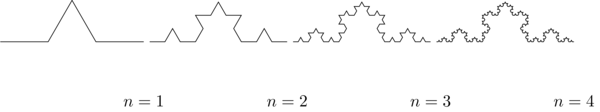
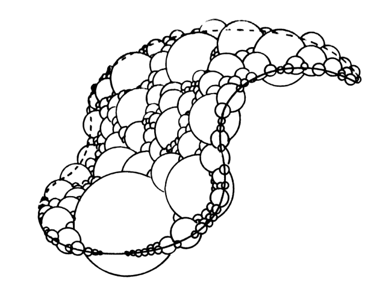
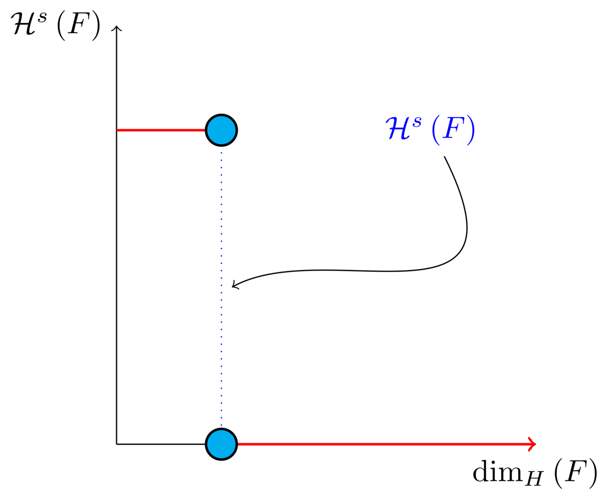
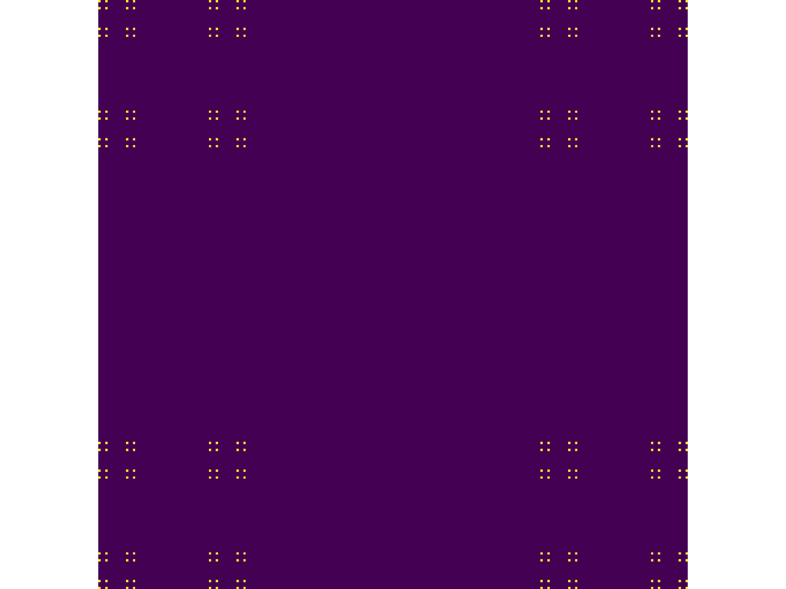
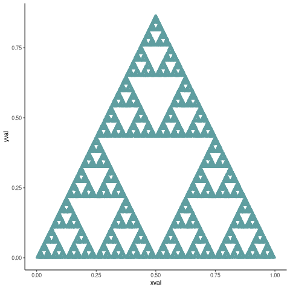
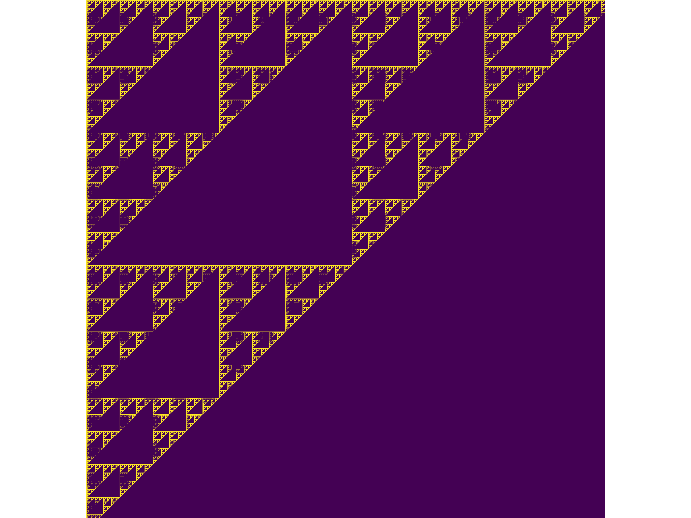
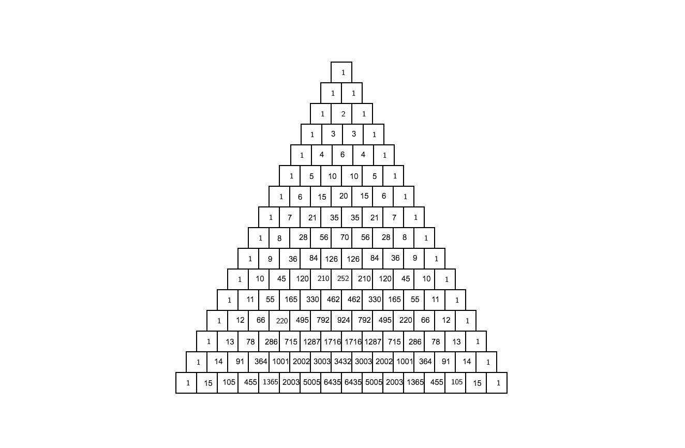
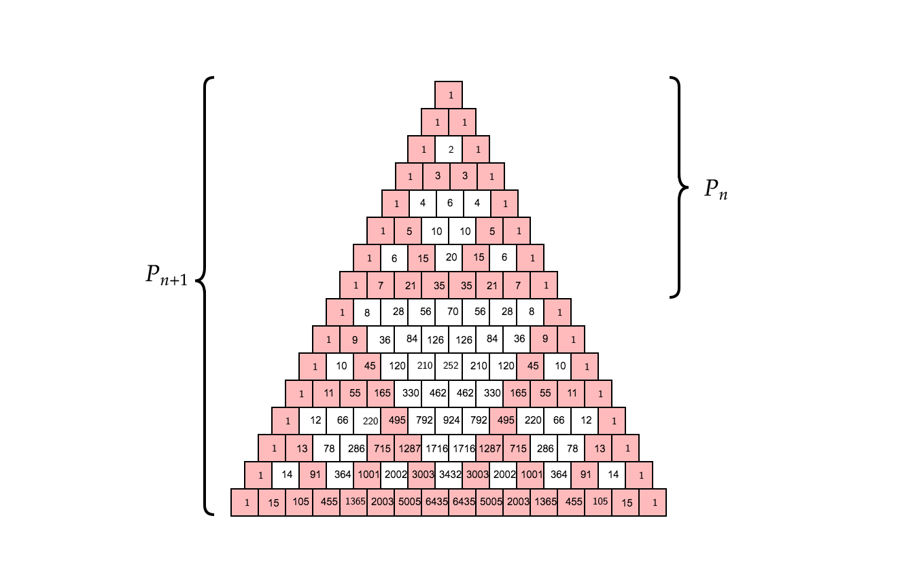
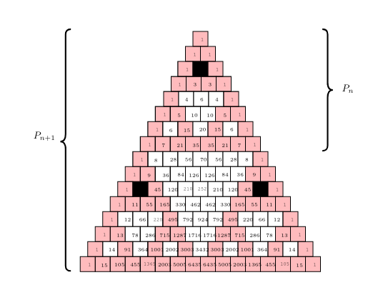
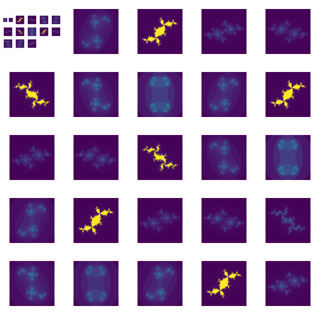

The Emergence of Patterns in Nature and Chaos Theory
Table of Contents
- 1. Introduction Ryan
- 2. Fractals
- 3. Connecting Fractals to Natural Processes Ryan
- 4. The Fibonacci Sequence and the Golden Ratio
- 5. Julia Sets Ryan
- 6. Mandelbrot Set Ryan
- 7. Conclusion Ryan
- 8. Appendix
- 8.1. Code Listings
- 8.2. Resources Used for the Hausdorff Dimension
- 8.3. Functions for constructing the Julia Set
- 8.4. Exponential Generating Functions
-
- 8.4.0.1. Derivative of the Exponential Generating Function
- 8.4.0.2. Homogeneous Proof Ryan James
-
1 Introduction Ryan
Fractals are complex shapes that often occur from natural processes, in this report we hope to investigate the emergence of patterns and complex structures from natural phenomena. We begin with an investigation into fractals and the concept of dimension and then discuss links between fractal patterns and natural processes.
1.1 A note on Images in this report
Although the images in this document may appear to be quite small, they are high quality PNG images and one of the luxuries of PDF is that the embedded media is near lossless, so to perceive greater detail in an image it is sufficient to simply zoom in and the greater detail should be rendered. 1
2 Fractals
2.1 Definition of a Fractal Ryan
Benoît Mandelbrot coined the term fractal in 1975 (NO_ITEM_DATA:gomoryBenoitMandelbrot19242010) and defined it his 1982 book The Fractal Geometry of Nature (NO_ITEM_DATA:mandelbrotFractalGeometryNature1982) :
A fractal is by definition a set for which the Hausdorff Besicovitch dimension strictly exceeds the topological dimension.
Every set with a non-integer \(D\) is a fractal. 2
The topological dimension is a strictly integer value that describes the natural dimension used to describe a shape (NO_ITEM_DATA:sandersonFractalsAreTypically2017), for example the Koch Snowflake (shown in Figure 2) is composed of just a line, so it’s topological dimension would simply be 1, it’s fractal dimension however is shown to be \(\frac{\ln\left( 4 \right)}{\ln\left( 3 \right)}\) at \eqref{eq:koch-dim} in §2.3.1.
Many authors seem to accept this earlier definition (see e.g. (\ NO_ITEM_DATA:vicsekFractalGrowthPhenomena1992) and (\ NO_ITEM_DATA:telChaoticDynamicsIntroduction2006)), this definition however does not capture many edge-case fractals (VII NO_ITEM_DATA:edgarMeasureTopologyFractal2008a) and in reprinting of The Fractal Geometry of Nature Mandelbrot himself commented that in hindsight it may have been more appropriate (NO_ITEM_DATA:mandelbrotFractalGeometryNature1982):
to leave the term “fractal” without a pedantic definition, to use “fractal dimension” as a generic term applicable to all the variants in Chapter 39, and to use in each specific case whichever definition is the most appropriate.
Gerald Edgar, in his 2008 book Measure, topology, and fractal geometry rejected this view because “a term without a ’pedantic definition’ cannot be studied mathematically” (VII NO_ITEM_DATA:edgarMeasureTopologyFractal2008a) and presented a more robust definition in Ch. 6 of that book, it was however accepted that the loose definition of fractal dimension is convenient and was indeed adopted in that work.
Although reviewing the precise definition of a fractal would have been very interesting, without a cursory knowledge of fractals generally this would have been very time consuming and outside the scope of this report 3.
Some authors simply define a fractal as a shape that shows irregularities at all scales (NO_ITEM_DATA:gouyetPhysicsFractalStructures1996) and in his 2003 book, Fractal Geometry, Facloner suggested that it is more convenient to describe a fractal by a list of properties characteristic of such shapes 4 because of the difficulty in defining a fractal in a way that can encompass all edge cases and provides the following characteristics (NO_ITEM_DATA:falconerFractalGeometryMathematical2003b):
- Detail at all scales
- Cannot be described in a traditional geometric way
- May have some form of approximate self similarity
- Usually the fractal dimension is greater than its topological dimension
- In many cases defined very simply, perhaps recursively
This will be the approach adopted in this report.
It’s interesting to note that many authors refer to complex natural shapes as fractals, such as coastlines (see e.g. (NO_ITEM_DATA:jiangFractalAnalysisComplexity1998, NO_ITEM_DATA:zhuFractalMechanismCoastline2002, NO_ITEM_DATA:zhongFractalPropertiesShoreline2017)) much in the spirit of Mandelbrot’s paper How long is the Coastline of Britain (NO_ITEM_DATA:mandelbrotHowLongCoast1967), although he coined the term fractal many years after this paper, presumably he might have had this in mind 5 when framing the definition so this issue in clearly defining what a fractal is appears on the surface to be a purely mathematical one (as opposed to a practical or applied one).
The Wikipedia page on fractals (NO_ITEM_DATA:Fractal2020) also points out that a fractal is nowhere differentiable, this would be because a fractal is nowhere smooth, which is certainly an important and distinguishing feature worth noting.
2.2 Fractals Generally James
Dimension is the main defining property of a fractal. As aforementioned above, the Hausdorff dimension is a unique number in that, if we take some shape in \(\mathbb{R}^{n}\), and the Hausdorff dimension converges to some number, then the dimension of the shape is given by that number. Otherwise, it will equal \(0\) or \(\infty\). For example, if we want to evaluate the dimension of a square and we use a 1-Dimensional shape as the cover set to calculate the Hausdorff dimension, we will get \(\infty\). On the other hand, if we do the same with a 3-Dimensional shape, we will get 0. And finally if we use a 2-Dimensional shape, the Hausdorff dimension will evaluate to 2. This same notion is important when computing the dimension of a more complex shape such as the Koch snowflake.
To define a fractal, we must define it’s dimension. Whilst some research states that a fractal has a non-integer dimension, this is not true for all fractals. Although, most fractals like the Koch snowflake do in fact have non-integer dimensions, we can easily find a counter example namely, the Mandelbrot set. The Mandelbrot set lies in the same dimension as a square, a 2-Dimensional shape. However, we give recognition to the complexity and roughness of the Mandelbrot set which clearly distinguishes itself from a square. Beneath the Mandelbrot set’s complexity are exact replicates of the largest scaled Mandelbrot set, i.e a self similar shape. Furthermore, although the Mandelbrot set has an integer dimension, the self similarity and complexity is what also defines its fractal nature.
2.3 Fractal Dimension
The concept of a non-integer dimension may at first seem odd, particularly given that the familiar definition from linear algebra (concerned with the number of vectors within a basis for a vector space (Fouss, Saerens, and Shimbo, n.d.)) is strictly an integer value, but in the early \(20^{\mathrm{th}}\) century mathematicians recognized the shortcomings of this definition (Ch. NO_ITEM_DATA:mandelbrotFractalGeometryNature1982).
In this section we hope to convince the reader that there is grounds for extending the definition of dimension and as a matter of fact many definitions for non-integer dimensions of a shape have been proposed (see generally (Ch. NO_ITEM_DATA:mandelbrotFractalGeometryNature1982) and (\S NO_ITEM_DATA:gouyetPhysicsFractalStructures1996)) of these the Hausdorff Dimension (and corresponding Hausdorff Measure) is considered to be the most important and mathematically robust (NO_ITEM_DATA:falconerFractalGeometryMathematical2003b), while the Box-Counting Dimension (introduced in § 2.3.4) has the most practical applications in science (NO_ITEM_DATA:peitgenChaosFractalsNew2004).
The Hausdorff dimension is more like counting balls than boxes and is identical to the Box-Counting Dimension in many cases, it’s more general but harder to define (NO_ITEM_DATA:sandersonFractalsAreTypically2017), An extension to the work of this report would be to show the mathematical connections between the Hausdorff Dimension and box counting dimension with respect to the fractals generated and measured.
2.3.1 Topological Equivalence Ryan
Topology is an area of mathematics concerned with ideas of continuity through the study of figures that are preserved under homeomorphic transformations (NO_ITEM_DATA:gilmoreTopologyChaosAlice2002) , where two figures are said to be homeomorphic if there is a continuous bijective mapping between the two shapes (NO_ITEM_DATA:peitgenChaosFractalsNew2004) . 6
So for example deforming a cube into a sphere would be homeomorphic, but deforming a sphere into a torus would not, because the the surface of the shape would have to be compromised to achieve that.
As mentioned above, historically, the concept of dimension was a difficult problem with a tenuous definition. Although an intuitive definition related the dimension of a shape to the number of parameters needed to describe that shape, this definition is not sufficient to be preserved under a homeomorphic transform.
Consider the Koch fractal and snowflake in Figures 1 and 2, at each iteration (\(n\)) the perimeter is given by \(p_{n}= \left(\frac{4}{3} \right)p_{n-1}\) and the number of edges by \(N_{n}\):
\begin{align} N_{n} &= N_{n-1} \cdot 4 \\ &= 3 \cdot 4^{n} \end{align}If the length of any individual side was given by \(l\) and scaled by some value \(s\) then the length of each individual edge would be given by:
\begin{align} l = \frac{s \cdot l_{0}}{3^{n}} \end{align}The total perimeter would be given by:
\begin{align} p_{n} &= N_{n} \times l \\ &= 3\cdot 4^{n} \times \frac{s \cdot l_{o}}{3^{n}} \\ &= 3 \cdot s \cdot l_{0} \left( \frac{4}{3} \right)^{n}\\ \implies p_{n} \cdot s & \propto \left(\frac{4}{3}\right)^{n}\\ & \implies n = \frac{\log\left( 4 \right)}{\log\left( 3 \right)} \approx 1.26 \label{eq:koch-dim} \end{align}This means that if the Koch Snowflake is scaled by any factor, the resulting perimeter of the snowflake will not be linearly proportional to the scaling factor, as would be the case with an ordinary shape such as a square or a circle, it will instead by proportional to 1.26, this should hopefully motivate the need to more clearly define both the concept of measure (in this case the perimeter 7) and dimension.
To clarify the Koch snowflake, is defined such that there are no edges, every point on the “curve” is the vertex of an equilateral triangle, this shape has no smooth edges.
See (NO_ITEM_DATA:strogatzNonlinearDynamicsChaos2015) and (\S NO_ITEM_DATA:baderSpacefillingCurvesIntroduction2013) for further reading on the self similar dimension of the Koch Snowflake.
This approach of considering the scaling factor of a deterministic fractal is known as the similarity dimension (p. NO_ITEM_DATA:strogatzNonlinearDynamicsChaos2015) and should be equal to the Hausdorff and box counting dimensions for most fractals. For fractals that aren’t so obviously self similar it won’t be feasible however (NO_ITEM_DATA:liIntegrationFuzzyLogic2006), for example with the Julia Set 8 or the outline of a coastline it is not immediately clear if the the dimension would be constant at all scales

Figure 1: Progression of the Koch Snowflake

Figure 2: Progression of the Koch Snowflake
2.3.2 Hausdorff Measure Ryan
The Hausdorff dimension depends first on a rigorous definition of measure, this is distinct from the box counting approach in that it is more mathematically rigorous, it is however complex and in practice this report will be concerned with implementing the box counting dimension. 9

Figure 3: The Hausdorff Measure of an arbitrary surface approximated by the cross section of balls with diameter \(< \delta \), this is reproduced from Measure, Topology and Fractal Geometry edgarMeasureTopologyFractal2008a.
Let \(F\) be some arbitrary subset of euclidean space \(\mathbb{R}^n\), 10
Let \(U\) be a subset of euclidean space \(\mathbb{R}^{n}\) such that the diameter is defined as the greatest distance between any of the points:
\[ \left\lvert U \right\rvert = \mathrm{sup}\left(\left\{ \left\lvert x- y \right\rvert \enspace : \enspace x,y \in U\right\} \right) \]
Consider a collection of these sets, \(G = \left\{U_i: i \in \mathbb{Z}^{+}\right\}\) such that each element has a diameter less than \(\delta\).
The motivating idea is that if the elements of \(G\) can be laid on-top of \(F\) then \(G\) is said to be a \(\delta\) -cover of \(F\), more rigorously, \(G\) is a \(\delta\)-cover of \(F\) if: 11
\begin{align} F \subset \bigcup_{U\in B} \left( U \right) \quad :\quad 0 \leq \left\lvert U \right\rvert \leq \delta \label{eq:hausdorff-covering} \end{align}An example of this covering is provided in Figure 4, in that example the figure on the right is covered by squares, which each could be an element of \(\{U_{i}\}\), it is important to note, by this definition, that the shapes represented by \(U\) could be any arbitrary figure (\S NO_ITEM_DATA:falconerFractalGeometryMathematical2003b) the size of which may vary in size so long as the diameter is less than \(\delta\).
So for example:
- \(F\) could be some arbitrary 2D shape, and \(U_{i}\) could be a collection of identical squares, OR
- \(F\) could be the outline of a coastline and \(U_{i}\) could be a set of circles, OR
- \(F\) could be the surface of a sheet and \(U_{i}\) could be a set of spherical balls as shown in Figure 3
- Some authors suggest that the Hausdorff Measure is concerned primarily with round covering objects (see e.g. (NO_ITEM_DATA:sandersonFractalsAreTypically2017)), this is well illustrated by Figure 3, however in truth it is merely more convenient to use round shapes for most fractals.
- The use of balls is a simpler but equivalent approach to the theory (\textsection NO_ITEM_DATA:falconerFractalGeometryMathematical2003b) because any set of diameter \(r\) can be enclosed in a ball of radius \(\frac{r}{2}\) (NO_ITEM_DATA:edgarMeasureTopologyFractal2008)
- \(F\) could be a more abstracted figure like Figures 4 or 6 and \(\{U_{i}\}\) a collection of various different lines, shapes or 3d objects.
The Hausdorff measure is concerned with only the diameter of each element of \(\{U_{i}\}\) and considers \(\sum_{U \in G} \left[\left\lvert U\right\rvert^{s}\right]\) where each element \(U\in G\) is arranged so as to minimize the value of the summation (NO_ITEM_DATA:falconerFractalGeometryMathematical2003b) , the \(\delta\)-Hausdorff is hence defined, for various dimensions \(s\):
\begin{align} \mathcal{H}^s_{\delta}\left( F \right)= \inf \left\{ \sum_{U\in G} \left\lvert U_i \right\rvert^s \enspace : \enspace \left\{U_i\right\} \text{ is a } \delta \text{-cover of } F \right\}, \quad \delta, s > 0 \label{eq:delta-measure} \end{align}The value of \(s\) can be different regardless of the dimension of \(F\), for example if \(F\) was an arbitrary 2D shape the value of \(\mathcal{H}_{\delta}^{2}\left(F\right)\) is equivalent to considering the number of shapes \(U\in G\) (e.g. boxes, discs etc.), of diameter \(\leq \delta\) that will cover over a shape as shown in Figure 4, the delta Hausdorff measure \(\mathcal{H}^{2}_{\delta} \left(F\right)\) will be the area of the boxes when arranged in such a way that minimizes the area.
As \(\delta\) is made arbitrarily small \(\mathcal{H}_{\delta}^{s}\) will approach some limit, in the case of Figures 4 and 6 the value of \(\mathcal{H}^{2}_{\delta}\) will approach the area of the shape as \(\delta \rightarrow 0\) and so the \(s^{th}\) dimensional Hausdorff measure is given by:
\begin{align} \mathcal{H}^{s} = \lim_{\delta \rightarrow 0}\left( \mathcal{H}^{s}_{\delta} \right) \label{eq:limit-haus} \end{align}This is defined for all subsets of \(\mathbb{R}^n\) for example the value of \(\mathcal{H}^{2}\) corresponding to Figure 6 will be limit that boxes would approach when covering that area, which would be the area of the shape (\(4\times 1^2 + 4\times \pi\times \frac{1}{2^2} + \frac{1}{2}\times 1 \times \sin{\frac{\pi}{3}}\)).
Figure 4: The blue outline corresponds to some \(F \subset \mathbb{R}^{2}\), covered by various grey objects, each of which represent an element from the set \(U_{i}\). The grey shapes all have a diameter less than \(\delta\) and so this \(\bigcup \left[U_{i}\right]\) would be a \(\delta\)-covering of \(F\).
2.3.2.1 Lower Dimension Hausdorff Measurements
2.3.2.1.1 Examples
Consider again the example of a 2D shape, the value of \(\mathcal{H}^{1}\) would still be defined by \eqref{eq:delta-measure}, but unlike \(\mathcal{H}^{2}\) in § 2.3.2 the value of \(\left\lvert U_i \right\rvert^1\) would be considered as opposed to \(\left\lvert U_i \right\rvert^2\) (i.e. the diameter as opposed to the diameter squared).
As \(\delta\) is made arbitrarily small the boxes 12 that cover the shape are made also to be arbitrarily small. Although the area of the boxes must clearly be bounded by the shape of \(F\), if one imagines an infinite number of infinitely dense lines packing into a 2D shape with an infinite density it can be seen that the total length of those lines will be infinite and so the limit in \eqref{eq:limit-haus} will increase without bound.
To build on that same analogy, another way to imagine this is to pack a 2D shape with straight lines, the total length of all lines will approach the same value as the length of the lines of the squares as they are packed infinitely densely. Because lines cannot fill a 2D shape, as the density of the lines increases, the overall length will increase without bound.
This is consistent with fractals as well, consider the Koch snowflake introduced in section 2.3.1 and shown in Figure 1, the dimension of this shape, as shown in § 2.3.1 is greater than 1, and the number of lines necessary to describe that shape is also infinite because every point of the “curve” is a point of an equilateral triangle.
2.3.2.1.2 Formally
If the dimension of \(F\) is less than \(s\), the Hausdorff Measure will be given by:
\begin{align} \mathrm{dim}\left( F \right ) < s \implies \mathcal{H}^{s} \left( F \right) = \infty \end{align}2.3.2.2 Higher Dimension Hausdorff Dimension
For small values of \(s\) (i.e. less than the dimension of \(F\)), the value of \(\mathcal{H}^s\) will be \(\infty\).
Consider some value \(s\) such that the Hausdorff measure is not infinite, i.e. values of \(s\):
\[ \mathcal{H}^s = L \in \mathbb{R} \]
Consider a dimensional value \(t\) that is larger than \(s\) and observe that:
\begin{align*} 0and so we have the following relationship:
\begin{align} \mathcal{H}^{s} \left(F\right) \in \mathbb{R}^{+} \implies \mathcal{H}^t\left( F \right)= 0 \quad \forall t > s \label{eq:hdfzero} \end{align}Hence the value of the s-dimensional Hausdorff Measure, \(s\) is only a finite, non-zero value, when \(s = \mathrm{dim}_{H}\left( F \right)\).

Figure 5: The value of the s-dimensional Hausdorff Measure of some subset of Euclidean space \(F\in \mathbb{R}^{n}\) is 0 or \(\infty\) when the dimension of \(F\) is not equal to \(s\).
2.3.3 Hausdorff Dimension Ryan
Figure 6: A disconnected subset of \(\mathbb{R}^{2}\), the squares have a diameter of \(\sqrt{2}\), the circles 1 and the equilateral triangles 1.
The value \(s\) at which \(\mathcal{H}^{s}\) \eqref{eq:hdfzero} changes from \(\infty\) to 0, shown in Figure 5, is the defined to be the Hausdorff Dimension (\S NO_ITEM_DATA:falconerFractalGeometryMathematical2003b), it is a generalization of the idea of dimension that is typically understood with respect to ordinary figures.
2.3.4 Box Counting Dimension James
While the Hausdorff dimension is the first formal definition to measure the roughness of a fractal, there are several other definitions of dimension that have stemmed from this. Namely, the box-counting dimension. The box counting method is widely used as it is relatively easy to calculate (NO_ITEM_DATA:falconerFractalGeometryMathematical2003b) and in many cases is equal to the Hausdorff Dimension (NO_ITEM_DATA:markpollicottFractalsDimensionTheory2005) (see generally (NO_ITEM_DATA:ListFractalsHausdorff2020)). The box-counting dimension is defined as the following from (NO_ITEM_DATA:falconerFractalGeometryMathematical2003):
Let \(F\) be any non-empty bounded subset of \(\mathbb{R}^n\) and let \(N_\delta(F)\) be the smallest number of sets of diameter at most \(\delta\) which can cover \(F\). The lower and upper box-counting dimensions of \(F\) respectively are defined as
\begin{equation*} \underline{\text{dim}}_BF = \underline{\lim}_{\delta \to 0} \frac{\ln N_\delta(F)}{-\ln \delta} \end{equation*} \begin{equation*} \overline{\text{dim}}_BF = \overline{\lim}_{\delta \to 0} \frac{\ln N_\delta(F)}{-\ln \delta} \end{equation*}When the lower and upper box-counting dimensions of \(F\) are equal, then
\begin{equation*} \text{dim}_BF = \lim_{\delta \to 0} \frac{\ln N_\delta(F)}{-\ln \delta} \end{equation*}For example, suppose we had a square with side length 1 and we use smaller squares of side length \(\frac{1}{\delta}\) to cover the larger square. This would mean that one side of the large square would need \(\delta\) \(\frac{1}{\delta}\) small squares, and so to cover the entire square, one would need \(n^2\) small squares, i.e. \(N_{\frac{1}{n}}(F) = n^2\). Now, substituting these values into the box-counting definition, we get:
\begin{align*} \text{dim}_BF &= \lim_{\frac{1}{\delta} \to 0} \frac{\ln(\delta^2)}{-\ln(\frac{1}{\delta})}\\ &= \lim_{\frac{1}{\delta} \to 0} \frac{\ln(\delta^2)}{\ln(\delta)}\\ &= \lim_{\frac{1}{\delta} \to 0} 2\frac{\ln(\delta)}{\ln(\delta)}\\ &= 2 \end{align*}Which is expected, because we know that a square is a 2-Dimensional shape. We can apply this same concept to fractals. Consider another example, the Koch Curve, a self similar fractal which we can calculate its dimension and provide a measure of roughness of the curve. If we take a close look at the curve progression in Figure 1, the pattern begins with one line segment and the middle third of the line is replaced with two sides of an equilateral triangle with side length \(\frac{1}{3}\). After this first iteration, the line segment now becomes four line segments. Thus, if we use a square of length \(\frac{1}{3^{\delta}}\) to cover the \(\delta^{th}\) iteration of the curve, there will be \(4^{\delta}\) line segments covered.
Let \(F\) be the Koch Curve.
\begin{align*} \text{dim}_BF &= \lim_{\frac{1}{3^{\delta}} \to 0} \frac{\ln(4^{\delta})}{-\ln(\frac{1}{3^{\delta}})}\\ &= \lim_{\frac{1}{3^{\delta}} \to 0} \frac{\ln(4^{\delta})}{\ln(3^{\delta})}\\ &= \lim_{\frac{1}{3^{\delta}} \to 0} \frac{\ln(4)}{\ln(3)}\\ &= \frac{\ln(4)}{\ln(3)} \end{align*}2.4 Generating Self Similar Fractals Ryan
In order to investigate the dimension of fractals, we intend to generate and measure a variety of figures by using of R (NO_ITEM_DATA:rcoreteamLanguageEnvironmentStatistical2020), Julia (NO_ITEM_DATA:bezansonJuliaFreshApproach2017) and Python (NO_ITEM_DATA:WelcomePythonOrg).
Self Similar fractals have a self-similar dimension and so can be used to verify an approach implemented with a programming language.
2.4.1 Vicsek Fractal
The Vicsek Fractal (NO_ITEM_DATA:vicsekFractalGrowthPhenomena1992) involves a pattern of iterating boxes, to implement this consider the process13:
\begin{align} \mathbf{B} \leftarrow \begin{bmatrix} \mathbf{B} & \mathbf{Z} & \mathbf{B} \\ \mathbf{Z} & \mathbf{B} & \mathbf{Z} \\ \mathbf{B} & \mathbf{Z} & \mathbf{B} \\ \end{bmatrix} \label{eq:visek-iter} \end{align}where:
- \(\mathbf{B}= \left[ 1 \right]\)
- \(\mathbf{Z}= \left[ 0 \right] \)

Figure 7: Vicsek fractal vicsekFractalGrowthPhenomena1992 (also known as the Anti-Cross-Stitch janwassenaarCantorDust2005) produced by listing 1, at each iterative step the fractal itself is “copied” to the four corners of itself producing this complex shape.
If this is repeated many times a matrix of values will be created, such a matrix can be interpreted as a greyscale image and plotted as a heat-map to show the fractal (shown in Figure ).
The iterative process shown in \eqref{eq:visek-iter} is represented as a recursive function at line 5 of listing 1 and visualized at line 22. To measure the the dimension of this fractal a the sum of the matrix is taken to be the measure of the fractal, two fractals are generated and the change in size relative to the scale is compared and the log taken to return the value of the dimension:
\[ \mathcal{D} = \frac{s}{m_{2}/m_{1}} \]
The recursive function begins with a 3x3 matrix, where the four corner squares and middle square are set to 1 and the rest are set to 0, a new matrix is built by joining together the past matrix following the rule described in \eqref{eq:visek-iter}. The function repeats until it reaches some arbitrary set width.
At each step of the process, the number of elements of this fractal increases by a ratio of 5 while the height increases only by a factor of 3, hence the self similarity dimension is given by:
\begin{align} 5 &= 3^{\mathcal{D}} \nonumber \\ \implies \mathcal{D} &= \frac{\ln 5}{\ln 3} \label{eq:vic-dim-val} \end{align}By modifying listing 1 alternative fractals can get also be generated like Cantor’s Dust and Sierpinski’s Carpet shown in Figures and .
Upon review this is actually a variant on the Cantor Dust which should actually be represented by a \(3 \times 3\) matrix:
\begin{align} \mathbf{B} \leftarrow \begin{bmatrix} \mathbf{B} & \mathbf{Z} & \mathbf{B} \\ \mathbf{Z} & \mathbf{Z} & \mathbf{Z} \\ \mathbf{B} & \mathbf{Z} & \mathbf{B} \\ \end{bmatrix} \end{align}and hence has the same dimension as the Vicsek Fractal as opposed to a dimension of 1.
#------------------------------------------------------------ #--- Function ----------------------------------------------- #------------------------------------------------------------ function vicsek_matrix(ICMat, width) B = ICMat h = size(B)[1] w = size(B)[2] Z = zeros(Int, h, w) B = [B Z B ; Z B Z ; B Z B] if (3*w)<width B = vicsek_matrix(B, width) end return B end #------------------------------------------------------------ #-- Plot ---------------------------------------------------- #------------------------------------------------------------ (mat = vicsek_matrix(fill(1, 1, 1), 27)) |> size GR.imshow(mat) #------------------------------------------------------------ #-- Similarity Dimension ------------------------------------ #------------------------------------------------------------ mat2 = vicsek_matrix(fill(1, 1, 1), 1000) l2 = sum(mat2) size2 = size(mat2)[1] mat1 = vicsek_matrix(fill(1, 1, 1), 500) l1 = sum(mat1) size1 = size(mat1)[1] #------------------------------------------------------------ julia> log(l2/l1)/log(size2/size1) 1.4649735207179269 julia> log(5)/log(3) 1.4649735207179269
2.4.1.1 Sierpinskis Carpet and Cantor’s Dust
2.4.1.2 Sierpinski’s Triangle
Not all fractal patterns can be produced by using recursive functions involving matrices, one such function is Sierpinski’s Triangle.
2.4.1.2.1 Chaos Game
The chaos game is a technique that can generate fractals, one of the advantages of this approach is that it can provide an estimate of the theoretical measure of a fractal without needing to iterate a function many times. The technique involves marking 3 points of an equilateral triangle and marking an arbitrary point, select one of these 3 points randomly with a uniform probability and create a new point halfway between the previous point and this point, repeat this process for as many points of detail are desired for the image.
This can be visualized by mapping the co-ordinates of an equilateral triangle to a Cartesian plane:
- \(A\) \(\left(0, 0\right)\)
- \(B\) \(\left(0, 1\right)\)
- \(C\) \(\left(0.5, \sin\left(\frac{\pi}{3}\right)\right)\)
The mean value of the \(x\), \(y\) values for these co-ordinates is equal to the halfway point and using this the chaos game can be implemented as a program and visualized by plotting each point on a scatter plot. This is implemented in R in listing 2 and the output is shown in Figure 10.
To measure the fractal dimension of this could be done by mapping the Cartesian plane back to a matrix and taking the same approach as previous fractals presented, this however was not implemented, due to time constraints, the dimension was however measured using the method discussed at § 2.4.1.2.2.
library(ggplot2) # Parameters n <- 50000 df <- data.frame("xval"=1:n, "yval"=1:n) # Constants x <- c(runif(1), runif(1)) A <- c(0, 0) B <- c(1, 0) C <- c(0.5, sin(pi/3)) # Loop for (i in 1:n) { dice = sample(1:3, 1) if (dice == 1) { x <- (x + A)/2 df[i,] <- x } else if (dice == 2) { x <- (x + B)/2 df[i,] <- x } else { x <- (x + C)/2 df[i,] <- x } } # Plot ggplot(df, aes(x = xval, y = yval)) + geom_point(size = 1, col = "cadet blue") + theme_classic()

Figure 10: Sierpinski’s Triangle created using the Chaos Game in listing 2.
2.4.1.2.2 Pascals Triangle Ryan
The even and odd values in Pascal’s Triangle demonstrate the same pattern as the Sierpinski Triangle this is discussed in greater detail in § 2.4.3, implementing this to produce the sierpinski triangle is very simple, it is however significantly more resource intensive, even in Julia than using the chaos game and the the measured dimension converges to the self similar dimension very slowly.
The fractal produced is composed of right angle triangles, as opposed to equilateral triangles but interestingly the measured dimension is still the same as an equilateral Sierpinski’s Triangle, it does however converge to this value slowly.
function pascal(n) mat = [isodd(binomial(BigInt(j+i),BigInt(i))) for i in 0:n, j in 0:n] return mat end GR.imshow(pascal(999)) GR.savefig("../../Report/media/pascal-sierpinsky-triangle.png") #------------------------------------------------------------ #-- Calculate Dimension ------------------------------------- #------------------------------------------------------------ mat2 = pascal(300) l2 = sum(mat2) size2 = size(mat2)[1] mat1 = pascal(200) l1 = sum(mat1) size1 = size(mat1)[1] log(l2/l1)/log(size2/size1) # https://en.wikipedia.org/wiki/Sierpi%C5%84ski_triangle log(3)/log(2) #------------------------------------------------------------ julia> log(l2/l1)/log(size2/size1) 1.8177195595512954 julia> log(3)/log(2) 1.5849625007211563
2.4.2 Turtle

Figure 11: Portion of the Koch Snowflake Produced by the Turtle graphics in listing 4
Some Fractals cannot be well explained by using matrices or the chaos game, Turtle graphics are a programmatic way to draw a pen across a screen, these are implemented in Julia using the Luxor package (NO_ITEM_DATA:JuliaGraphicsLuxorJl2020).
We were unfourtunately unable to implement a strategy to measure the dimension of such fractals, one such approach that looked promising but did not return consistent results was to export the generated image to a PNG and then import that file as a matrix using the Python Pillow Library (NO_ITEM_DATA:PillowPillowPIL) or the Julia Images library (NO_ITEM_DATA:JuliaImagesImagesJl2020), when this was unsucessful we also experimented with ImageMagick (NO_ITEM_DATA:llcImageMagick), AstroPy (NO_ITEM_DATA:Astropy) and JuliaAstro (NO_ITEM_DATA:JuliaAstroJuliaAstro). Unfourtunately the values returned by this approach were inconsistent and further investigation into this method is required.

Figure 12: Sierpinski’s triangle generated
The koch snowflake can be implemented by recursively calling a function that draws the first level of a koch curve, if this function decrements a provided level and is defined to call itself for each arm of the curve unless the level has reached zero it will produce a koch snowflake at the specified level, this is implemented in listing 4 and shown in Figure 11.
using Shapefile using Luxor using Pkg #------------------------------------------------------------ #--- Round Snowflake Working --------------------------------- #------------------------------------------------------------ function snowflake(length, level, ♘) if level == 0 Forward(♘, length) Circle(♘, 1) return end length = length/9 snowflake(length, level-1, ♘) Turn(♘, -60) snowflake(length, level-1, ♘) Turn(♘, 2*60) snowflake(length, level-1, ♘) Turn(♘, -60) snowflake(length, level-1, ♘) end ♘ = Turtle() @png begin for i in 1:3 levels = 9 Pendown(♘) snowflake(8^(levels-1), levels, ♘) Turn(♘, 120) end end 600 600 "snowCurve.png"
The dragon curve is slightly more complicated and can be implemented by two separate functions, one to turn and trigger a motion and the other to control in which direction to turn, this is implemented in Julia in listing 5 and shown in Figure .
using Shapefile using Luxor #------------------------------------------------------------ #--- Dragon ------------------------------------------------- #------------------------------------------------------------ # Define the Parent Function function dragon(♘, order, length) print(" ") # Don't remove this or code breaks, I don't know why? Turn(♘, order*45) dragon_iterate(♘, order, length, 1) end # Define the Helper Function function dragon_iterate(♘, order, length, sign) if order==0 Forward(♘, length) else rootHalf = sqrt(0.5) dragon_iterate(♘, order -1, length*rootHalf, 1) Turn(♘, sign * -90) dragon_iterate(♘, order -1, length*rootHalf, -1) end end # Draw the Image @png begin ♘ = Turtle() # Start from left to centre result Turn(♘, 180) Penup(♘) Forward(♘, 200) Pendown(♘) Turn(♘, 180) # Create the Output dragon(♘, 15, 400) end 1000 1000 # Create many images ;mkdir /tmp/dragon for i in range(1, 15) name = string("/tmp/dragon/d", lpad(d, 5, "0"), ".png") @png begin ♘ = Turtle() # Start from left to centre result Turn(♘, 180) Penup(♘) Forward(♘, 200) Pendown(♘) Turn(♘, 180) # Create the Output dragon(♘, 15, 400) end 1000 1000 name end montage -geometry 1000x1000 *.png dragon.png

Figure 13: Progression of the Dragon Curve, this is known as a space filling curve peitgenChaosFractalsNew2004 which is a curve with a range that contains the entire 2-dimensional unit square ventrellaSpaceFillingCurvesAre2014, it has a dimension of two. For some historical background on the curve on the origins of this curve see tabachnikovDragonCurvesRevisited2014.
2.4.3 Pascals Triangle and Sierpinski’s Triangle James
2.4.3.1 Motivation
Over many centuries, mathematicians have been able to produce a range of patterns from Pascal’s triangle. One of which is relevant to the emergence of Sierpinski’s triangle. To construct Pascal’s triangle it begins with a 1 in the \(0^{th}\) (top) row, then each row underneath is made up of the sum of the numbers directly above it, see Figure 1. Alternatively, the \(n^{th}\) row and \(k^{th}\) column can be written in combinatorics form, \(\binom{n}{k} = \binom{n-1}{k-1} + \binom{n-1}{k}\).

2.4.3.2 The connection
As mentioned before there is one pattern that produces the Sierpinski triangle, namely highlighting all odd numbers in Pascal’s triangle. This is equivalent to considering all the numbers in the triangle modulo 2, shown in Figure 15.

Figure 15: Pascals Triangle coloured red for odd values

Figure 16: The black squares represent one example of a position on Pascal’s triangle that are equivalent modulo 2
In Figure 15, we can observe that all the highlighted odd numbers begin to form the Sierpinski triangle. Note that this is not the complete Sierpinski’s triangle, that would require an infinite number of iterations. Now, we also notice that there are three identical Sierpinski triangles within the larger triangle, each containing the same value modulo 2, at each corresponding row and column.
To prove this, we need to split the triangle into two parts, \(P_{n}\) denoting the first \(2^{n}\) rows, i.e. the top “Sierpinski triangle” in Figure 15 and \(P_{n+1}\) representing the entire triangle. We must show that any chosen square in \(P_{n}\) is equal to the corresponding row and column in the lower two triangles of \(P_{n+1}\), shown in Figure 16. This requires an identity that allows us to work with combinations in modulo 2, namely Lucas’ Theorem.
2.4.3.3 The connection
Let \(n,k \ge 0\) and for some prime \(p\), we get:
\begin{equation} \binom{n}{k} = \prod_{i=0}^{m} \binom{n_i}{k_i} \quad (\text{mod}~p) \end{equation}where,
\begin{align*} n &= n_{m}p^{m}+n_{m-1}p^{m-1}+\cdots + n_{1}p+n_{0},\\ k &= k_{m}p^{m}+k_{m-1}p^{m-1}+\cdots + k_{1}p+k_{0}\\ \end{align*}are the expansions in radix \(p\) 15. This uses the convention that \(\binom{n}{k} = 0\) if \(k < n\)
Take some arbitrary row \(r\) and column \(c\) in the triangle \(P_{n}\). If we add \(2^{n}\) rows to \(r\), we will reach the equivalent row and column in the lower left triangle of \(P_{n+1}\), since there are \(2^{n}\) rows in \(P_{n}\). In the same way, if we add \(2^{n}\) columns to \(c\) we reach the equivalent row and column in the lower right triangle of \(P_{n+1}\), leaving us with:
\begin{align*} \text{Top Triangle:} \quad &\binom{r}{c} \\ \text{Bottom-left Triangle:}\quad &\binom{r + 2^n}{c} \\ \text{Bottom-right Triangle :}\quad &\binom{r + 2^n}{c + 2^n} \label{eq:bottom-right} \end{align*}Using Lucas’ theorem, we can prove that the above statments are equivalent.
We can rewrite \(r\) and \(c\) in base 2 notation as follows:
\begin{align*} r=r_{i}2^{i}+r_{i-1}2^{i-1}+\cdots + r_{1}2+r_{0}= \left[r_{i}r_{i-1}\cdots r_{1}r_{0}\right]_2\\ c=c_{i}2^{i}+c_{i-1}2^{i-1}+\cdots +c_{1}2+c_{0}=\left[c_{i}c_{i-1}\cdots c_{1}c_{0}\right]_2\\ \end{align*} \begin{align*} \binom{2^n + r}{c} &\equiv \binom{1r_{i-1}r_{i-2} \cdots r_{0}}{0c_{i-1}c_{i-2} \cdots c_{0}} \quad &(\text{mod} 2)\\ &\equiv \binom{1}{0}\binom{r_{i-1}}{c_{i-1}}\binom{r_{i-2}}{c_{i-2}} \cdots \binom{r_0}{c_0} \quad &(\text{mod} 2)\\ &\equiv\binom{r_{i-1}}{c_{i-1}}\binom{r_{i-2}}{c_{i-2}} \cdots \binom{r_0}{c_0} \quad &(\text{mod} 2)\\ &\equiv \binom{r}{c} \quad &(\text{mod} 2) \end{align*} \begin{align*} \binom{2^n + r}{2^n + c} &\equiv \binom{1r_{i-1}r_{i-2} \cdots r_{0}}{1c_{i-1}c_{i-2} \cdots c_{0}} \quad &(\text{mod} 2)\\ &\equiv \binom{1}{1}\binom{r_{i-1}}{c_{i-1}}\binom{r_{i-2}}{c_{i-2}} \cdots \binom{r_0}{c_0} \quad &(\text{mod} 2)\\ &\equiv \binom{r_{i-1}}{c_{i-1}}\binom{r_{i-2}}{c_{i-2}} \cdots \binom{r_0}{c_0} \quad &(\text{mod} 2)\\ &\equiv \binom{r}{c} \quad &(\text{mod} 2) \end{align*}Thus, \(\binom{r}{c} = \binom{2^n + r}{c} = \binom{2^n + r}{2^n + c} \quad (\text{mod} 2)\), which concludes the proof
2.5 Fractal Dimensions Sans Self Similarity Ryan
Not all fractals demonstrate obvious self-similarity, coastlines, as previously mentioned in § 2.1, are a common example but are not unique in this regard, many natural phenomena such as the distribution of galaxies, shape of clouds, outline of mountains and the the path of Brownian motion have a fractal structure (Ch. NO_ITEM_DATA:gouyetPhysicsFractalStructures1996) that does not exhibit obvious self-similarity.
In order to measure the dimension of such fractals the log transformed measure and scale can be compared on a scatter plot in order to confirm that the relationship is linear, if the relationship is linear the dimension is constant and equal to the slope of the line, (see e.g. (\S NO_ITEM_DATA:vicsekFractalGrowthPhenomena1992), (NO_ITEM_DATA:sandersonFractalsAreTypically2017) ,mandelbrotHowLongCoast1967).
This approach is implemented to measure the dimension of the Julia Set in § 5.4.
3 Connecting Fractals to Natural Processes Ryan
In order to better understand the ways in which complex fractal patterns can emerge from simple processes, a simple process that leads to the emergence of such a pattern has been constructed, this is not a pattern that we have been able to find discussed in the literature but it does show simple connection between simple processes, patterns and the emergence of values such as golden ratio and the Fibonacci Sequence.
3.1 Constructing a Simple Process
Consider a fractal that begins simply with a square , imagine that this square is replicated, rotated and appended
, then that shape, again is replicated rotated and appended
,this process is illustrated in Figure 18, and if perpetuated a pattern emerges, as shown in Figure 17, this fractal can be generated by joining two matrices together in a manner that is consistent with the pattern described, this is shown in listing 6.
function matJoin(A, B) function nrow(X) return size(X)[1] end function ncol(X) return size(X)[2] end emptymat = zeros(Bool, max(size(A)[1], size(B)[1]) ,sum(ncol(A) + ncol(B)) ) emptymat[1:nrow(A), 1:ncol(A)] = A emptymat[1:nrow(B), (ncol(A)+1):ncol(emptymat)] = B return emptymat end function mywalk(B, n) for i in 1:n B = matJoin(B, rotl90(B)); end return B end GR.imshow(mywalk([1, 1], 9))

Figure 17: Fractal that emerges by Rotating and appending boxes, this demonstrates the relationship between the Fibonacci numbers and golden ratio very well
Figure 18: Process to generate the fractal shown in Figure 17 and described in My-Frac-ink-blue. This process involves rotating and appending units and demonstrates a simple process from which the Fibonacci Numbers emerge from simple processes.
3.2 The Fibonacci Numbers
The fractal demonstrates a pattern that follows an angle that is caused by the join of the replicated and rotated unit 16, the shape of these joins is a rectangle that follows the Fibonacci numbers due to the additive nature of the process, this is illustrated in Figure 20, in § it is shown that \(\lim \left(\frac{F_{n}}{F_{n-1}}\right) = \varphi\), this means that the edges of the fractal are proportional to one another as shown in listing 21 and so the angle can be given by the following relationship:
\begin{align} \theta &= \tan^{- 1} \left(\lim_{n \rightarrow \infty} \left(\frac{F_{n- 2}}{F_{n}} \right) \right) \\ &= \tan^{- 1} \left(\lim_{n \rightarrow \infty} \left(\frac{F_{n- 2}}{F_{n- 1}+ F_{n- 2}} \right) \right) \\ &= \tan^{- 1} \left(\lim_{n \rightarrow \infty} \left(\frac{F_{n}}{F_{n+ 1}+ F_{n}} \right) \right) \intertext{Because \(\lim_{n \rightarrow \infty} \left( \frac{F_n}{F_{n- 1}} \right) = \varphi \approx 1.618 \) we can substite the values:} \notag\\ &= \tan^{-1} \left( \varphi\left( \varphi + 1 \right) \right) \\ &= \tan^{-1} \left( \frac{\psi}{\varphi + 1}\right) \\ &\approx 0.231^{\mathrm{c}} \end{align}this is illustrated in Figures 20 and 21. This angle can be contrasted to the golden angle visualized in Figure 19 and although different it interesting to note that \( 2 \pi\left( \frac{\psi}{\varphi+1}\right) \equiv 2 \pi \psi \equiv 0 \pmod \psi \) .
Figure 19: Diagram of the Golden Angle, an angle formed by having a ratio of edges equal to the golden ratio.
Figure 20: TODO
Figure 21: TODO
3.3 The Dimension of the Fractal
Each time this fractal is iterated the measure (i.e. the number of boxes) is doubled, but the scale of the fractal is increased by a ratio of the width and height, because the boxes add up this ratio will be a ratio of Fibonacci numbers which is shown to be equal to the golden ratio \(\phi\) in § 4, hence the dimension of this fractal is given by:
\begin{align} \log_{\varphi}\left(2\right) &= \frac{\log (2)}{\log (\varphi)} \\ &\approx 1.44042 \end{align}This value is consistent with measurements performed using Julia in listing 7.
using DataFrames function returnDim() mat2 = mywalk(fill(1, 1, 1), 10) l2 = sum(mat2) size2 = size(mat2)[1] mat1 = mywalk(fill(1, 1, 1), 11) l1 = sum(mat1) size1 = size(mat1)[1] df = DataFrame() df.measure = [log(l2/l1)/log(size2/size1)] df.actual = [log(2)/log(1.618) ] return df end returnDim() #------------------------------------------------------------ # 1×2 DataFrame # │ Row │ measure │ actual │ # │ │ Float64 │ Float64 │ # ├─────┼─────────┼─────────┤ # │ 1 │ 1.44052 │ 1.44048 │
4 The Fibonacci Sequence and the Golden Ratio
4.1 The Golden Ratio Ryan
The Fibonacci Sequence and Golden Ratio occur in many patterns observed in natural phenomena (see (NO_ITEM_DATA:shellyallenFibonacciNature, NO_ITEM_DATA:benedettapalazzoNumbersNatureFibonacci2016, NO_ITEM_DATA:MinarovaNikoletta2014TFSN, NO_ITEM_DATA:NatureGoldenRatio2018, NO_ITEM_DATA:robertlambHowAreFibonacci2008, NO_ITEM_DATA:ronknottFibonacciNumbersGolden2016)), an example of such an occurrence is discussed in section 4.5 and a simple process demonstrating the emergence of the Fibonacci Numbers is discussed in § 3.
The Golden Ratio is a value \(\varphi\) that satisfies the following property:
\begin{align} \frac{a}{b} &= \frac{a+ b}{a}= \varphi \nonumber \\ \varphi &= 1+ \frac{1}{\varphi} \nonumber \\ \implies \varphi^2 &= \varphi + 1 \label{eq:phi-sim-to-fib-rec} \\ \implies \varphi &= \frac{1+ \sqrt{5} }{2} \label{eq:phi-value} \end{align}An interesting property of the golden ratio is that successive ratios of the Fibonacci numbers converge to the golden ratio.
Consider the series:
\[\begin{aligned} G_n &= \frac{F_{n} }{F_{n - 1} } \\ \end{aligned}\]
Such that \(F_{n}\) is the \(n^{\mathrm{th}}\) Fibonacci Number:
\[\begin{aligned} F_n = F_{n- 1} + F_{n- 2} ; \quad F_1 = F_2 = 1 \end{aligned}\]
4.2 Golden Ratio In terms of the Fibonacci Sequence
The Series \(G\) is alternating convergent series, to show that consider the two sub-sequences formed by taking the odd and even ratios, these are both bounded monotone sequences.
4.2.1 Prove that the Sequence is Bounded James
Since we are trying to show that the ratio of Fibonacci numbers converges by the Monotone Convergence Theorem, we will let \(G_n\) be as follows:
\begin{equation*} G_n = \bigg\{ \frac{F_{n+1}}{F_n} \bigg\}_{n=1}^\infty, \quad F_1=F_2=1 \end{equation*}To show \(G_n\) is bounded we must consider the following sub sequences,
- \(\{G_{2n}\}_{n=1}^\infty\) is bounded below and decreasing
- \(\{G_{2n-1}\}_{n=1}^\infty\) is bounded above and increasing
Proving (i):
To show \(\{G_{2n}\}_{n=1}^\infty\) is decreasing we will show \(G_{2n} - G_{2(n+1)} > 0\) through the process of induction.
Proof:
For least element \(n = 1\):
Now assume true for all \(n\):
Prove true for \(n+1\):
\begin{align*} G_{2(n+1)} - G_{2(n+2)} &= G_{2n + 2} - G_{2n+4)}\\ &= \frac{F_{2n+3}}{F_{2n+2}} - \frac{F_{2n+5}}{F_{2n+4}}\\ &= \frac{F_{2n+3}F_{2n+4} - F_{2n+5}F_{2n+2}}{F_{2n+2}F_{2n+4}}\\ &= \frac{F_{2n+3}(F_{2n+3}+F_{2n+2}) - F_{2n+2}(F_{2n+4}+F_{2n+3})}{F_{2n+2}F_{2n+4}}\\ &= \frac{(F_{2n+3})^2 - F_{2n+2}F_{2n+4}}{F_{2n+2}F_{2n+4}}\\ &= \frac{(F_{2n+3})^2}{F_{2n+2}F_{2n+4}} - 1\\ &= \frac{F_{2n+3}}{F_{2n+2}} \cdot \frac{F_{2n+3}}{F_{2n+4}} -1\\ &= \frac{G_{2n+2}}{G_{2n+3}} - 1\\ \end{align*}Since \(\frac{G_{2n}}{G_{2(n+1)}} > 1\) for all \(n\) by assumption, then \(\frac{G_{2n+2}}{G_{2n+3}} > 1\) follows, hence
\begin{align*} G_{2(n+1)} - G_{2(n+2)} &= \frac{G_{2n+2}}{G_{2n+3}} - 1\\ &> 1 -1\\ &> 0 \end{align*}
Therefore by mathematical induction, \(G_{2n}\) is monotic decreasing.
Now, for \(\{G_{2n}\}_{n=1}^\infty\) to be bounded below we will consider the entire set \(G_n\), hence:
Since all Fibonacci numbers are positive, \(\frac{F_{n-1}}{F_n} > 0\), so
\begin{equation*} G_n = 1 + \frac{F_{n-1}}{F_n} > 1 \end{equation*}Thus \(G_n\) being bounded below implies \(G_{2n}\) is also bounded below.
Proving (ii):
To show \(\{G_{2n}\}_{n=1}^\infty\) is decreasing we will show \(G_{2n-1} - G_{2(n+1)-1} < 0\) through the process of induction.
Proof:
For least element \(n = 1\):
Now assume true for all \(n\):
Prove true for \(n+1\):
\begin{align*} G_{2(n+1) -1} - G_{2(n+1) + 1} &= G_{2n+1} - G_{2n+3}\\ &= \frac{F_{2n+2}}{F_{2n+1}} - \frac{F_{2n+4}}{F_{2n+3}}\\ &= \frac{F_{2n+2}F_{2n+3} - F_{2n+4}F_{2n+1}}{F_{2n+1}F_{2n+3}}\\ &= \frac{F_{2n+2}(F_{2n+2}+F_{2n+1}) - F_{2n+1}(F_{2n+3}+F_{2n+2})}{F_{2n+1}F_{2n+3}}\\ &= \frac{(F_{2n+2})^2 - F_{2n+1}F_{2n+3}}{F_{2n+1}F_{2n+3}}\\ &= \frac{(F_{2n+2})^2}{F_{2n+1}F_{2n+3}} - 1\\ &= \frac{F_{2n+2}}{F_{2n+1}} \cdot \frac{F_{2n+2}}{F_{2n+3}} -1\\ &= \frac{G_{2n+1}}{G_{2n+2}} - 1\\ \end{align*}Since \(\frac{G_{2n-1}}{G_{2n+1}} < 1\) for all \(n\) by assumption, then \(\frac{G_{2n+1}}{G_{2n+2}} < 1\) follows, hence
\begin{align*} G_{2(n+1)-1} - G_{2(n+1)+1} &= \frac{G_{2n+1}}{G_{2n+2}} - 1\\ &< 1 -1\\ &< 0 \end{align*}
Therefore by mathematical induction, \(G_{2n-1}\) is increasing.
Now, for \(\{G_{2n-1}\}_{n=1}^\infty\) to be bounded above we will again consider the entire set \(G_n\), hence:
Since \(\frac{F_{n-1}}{F_n} \le 1\) we can deduce that
\begin{equation*} G_n = 1 + \frac{F_{n-1}}{F_n} \le 2 \end{equation*}Thus \(G_n\) being bounded above by 2 implies \(G_{2n-1}\) is also bounded above by 2.
4.2.2 Find the Limit James
By the Monotone Convergence Theorem, \(\lim_{n \to \infty} G_n\) exists. We will assume that \(G_{2n}\) and \(G_{2n-1}\) approach the same limit \(L~~\forall n \ge 1\) Meaning, we will also take:
\begin{equation*} \lim_{n\to \infty}G_n = \lim_{n\to \infty}G_{n-1} = L \end{equation*} \begin{align*} \lim_{n\to \infty}G_n &= \lim_{n \to \infty} \frac{F_{n} + F_{n+ 1} }{F_{n+ 1} } \\ &= 1 + \lim_{n \to \infty} \frac{F_{n- 1} }{F_n} \\ &= 1 + \lim_{n \to \infty}\frac{1}{G_{n-1}} \\ \implies L &= 1 + \frac{1}{L}\\ L^2 &= L + 1\\ 0 &= L^2 - L - 1\\ \implies L &= \frac{\sqrt{5} + 1 }{2} = \varphi \end{align*}4.3 Comments Ryan
In the 13\textsuperscript{th} century 17 Fibonacci developed 18 his namesake sequence when working on a problem concerning the growth rate of a rabbit population (NO_ITEM_DATA:ronknottFibonacciNumbersGolden2016). Continuous population growth is typically modelled with calculus by the equation \(\frac{\mathrm{d} }{\mathrm{d} t}\left( p \right) \propto p\) (\S NO_ITEM_DATA:giordanoFirstCourseMathematical2014), what’s interesting is that this population model itself generates a fractal when the number of stationary points is plotted against the growth rate (Ch. NO_ITEM_DATA:briggsTurbulentMirrorIllustrated1989) and this fractal is equivilant to a plot of the Mandelbrot Set (discussed in § 6) where the \(x\)-axis represents the real component of a value and the \(y\)-axis the number of iterations before a value exceeds a modulus of 2 (see generally (NO_ITEM_DATA:mullerThisEquationWill2020)). This is not something we had time to investigate unfourtunately but it does demonstrate the deep connection between natural phenomena such as population growth, the Fibonacci Sequence and complex fractals such as the Mandelbrot set.
4.3.1 Equivalent forms of the Golden Ratio
The golden ratio is sometimes expressed in odd forms in the literature:
\[\begin{aligned} \lim_{n \rightarrow \infty }\left[ \frac{F_n}{F_{n- 1} } \right] &= \varphi \\ \lim_{n \rightarrow \infty }\left[ \frac{F_n}{F_{n- 1} } \right] &= \psi \\ \varphi - \psi &= 1 \\ \varphi \times \psi &= 1 \\ \frac{\psi}{\varphi} = \frac{1}{\varphi^2} = \frac{1}{1-\varphi} &= \frac{1}{2-\varphi} = \frac{2}{3 - \sqrt{5} } \end{aligned}\]
4.4 A closed Solution for the Fibonacci Numbers Ryan
The Fibonacci numbers can be solved using Calculus and this closed solution can be used to show that the ratio of Fibonacci numbers converges to the golden ratio. 19
Consider the Fibonacci Sequence:
\begin{align} a_{n}&= a_{n - 1} + a_{n - 2} \nonumber \\ \iff a_{n+ 2} &= a_{n+ 1} + a_n \label{eq:fib-def-shift} \end{align}From observation, this appears similar in structure to the following ordinary differential equation, which would be fairly easy to deal with:
\begin{align*} f''\left( x \right)- f'\left( x \right)- f\left( x \right)= 0 \end{align*}By ODE Theory we have \(y \propto e^{m_{i}x}, \enspace i = 1, 2\) (\S NO_ITEM_DATA:zillDifferentialEquationsBoundaryvalue2009) and the following power series (\S NO_ITEM_DATA:churchillComplexVariablesApplications2014):
\begin{align*} f\left( x \right)= e^{mx} = \sum^{\infty}_{n= 0} \left[ r^{m} \frac{x^n}{n!} \right] \end{align*}So using some sort of a transformation involving a power series may help to relate the discrete problem back to a continuous one.
Consider using the following generating function, (proof of the generating function derivative as in \eqref{eq:exp-gen-def-2} and \eqref{eq:exp-gen-def-3} is provided in section 8.4.0.1)
\begin{align} f\left( x \right) &= \sum^{\infty}_{n= 0} \left[ a_{n} \cdot \frac{x^n}{n!} \right] \label{eq:exp-gen-def-1} \\ \implies f'\left( x \right) &= \sum^{\infty}_{n= 0} \left[ a_{n+1} \cdot \frac{x^n}{n!} \right] \label{eq:exp-gen-def-2} \\ \implies f''\left( x \right) &= \sum^{\infty}_{n= 0} \left[ a_{n+2} \cdot \frac{x^n}{n!} \right] \label{eq:exp-gen-def-3} \end{align}So the Fibonacci recursive relation from \eqref{eq:fib-def-shift} could be expressed :
\begin{align*} a_{n+ 2} &= a_{n+ 1} + a_{n}\\ \frac{x^n}{n!} a_{n+ 2} &= \frac{x^n}{n!}\left( a_{n+ 1} + a_{n} \right)\\ \sum^{\infty}_{n= 0} \left[ \frac{x^n}{n!} a_{n+ 2} \right] &= \sum^{\infty}_{n= 0} \left[ \frac{x^n}{n!} a_{n+ 1} \right] + \sum^{\infty}_{n= 0} \left[ \frac{x^n}{n!} a_{n} \right] \\ \end{align*}And hence by applying \eqref{eq:exp-gen-def-1}, \eqref{eq:exp-gen-def-2} and \eqref{eq:exp-gen-def-3}:
\begin{align} f''\left( x \right) &= f'\left( x \right)+ f\left( x \right) \end{align}Using the theory of higher order linear differential equations with constant coefficients it can be shown:
\begin{align*} f\left( x \right)= c_1 \cdot \mathrm{exp}\left[ \left( \frac{1- \sqrt{5} }{2} \right)x \right] + c_2 \cdot \mathrm{exp}\left[ \left( \frac{1 + \sqrt{5} }{2} \right)x \right] \end{align*}By equating this to the power series:
\begin{align*} f\left( x \right)&= \sum^{\infty}_{n= 0} \left[ \left( c_1\left( \frac{1- \sqrt{5} }{2} \right)^n + c_2 \left( \frac{1+ \sqrt{5} }{2} \right)^n \right) \cdot \frac{x^n}{n!} \right] \end{align*}Now given that:
\begin{align*} f\left( x \right)= \sum^{\infty}_{n= 0} \left[ a_n \frac{x^n}{n!} \right] \end{align*}We can conclude that:
\begin{align*} a_n = c_1\cdot \left( \frac{1- \sqrt{5} }{2} \right)^n + c_2 \cdot \left( \frac{1+ \sqrt{5} }{2} \right)^n \end{align*}By applying the initial conditions:
\begin{align*} a_0= c_1 + c_2 \implies c_1= - c_2\\ a_1= c_1 \left( \frac{1+ \sqrt{5} }{2} \right) - c_1 \left( \frac{1-\sqrt{5} }{2} \right) \implies c_1 = \frac{1}{\sqrt{5} }\\ \therefore ~ c_1 = \frac{1}{\sqrt{5}, ~ c_2 = -\frac{1}{\sqrt{5}}} \end{align*}And so finally we have the solution to the Fibonacci Sequence eq:fib-def-shift:
\begin{align} a_n &= \frac{1}{\sqrt{5} } \left[ \left( \frac{1+ \sqrt{5} }{2} \right)^n - \left( \frac{1- \sqrt{5} }{2} \right)^n \right] \nonumber \\ &= \frac{\varphi^n - \psi^n}{\sqrt{5} } \nonumber\\ &=\frac{\varphi^n - \psi^n}{\varphi - \psi} \label{eq:fib-sol} \end{align}where:
- \(\varphi = \frac{1+ \sqrt{5} }{2} \approx 1.61\ldots\)
- \(\psi = 1-\varphi = \frac{1- \sqrt{5} }{2} \approx 0.61\ldots\)
4.4.1 Golden Ratio
This closed solution \eqref{eq:fib-sol} also demonstrates that successive terms of the Fibonacci numbers converge to the Golden Ratio:
\begin{align*} F_n &= \frac{\varphi^n-\psi^n}{\varphi-\psi} = \frac{\varphi^n-\psi^n}{\sqrt 5} \\ \iff \frac{F_{n+1}}{F_n} &= \frac{\varphi^{n+ 1} - \psi^{n+ 1}}{\varphi^{n} - \psi^{n}} \\ \iff \lim_{n \rightarrow \infty}\left[ \frac{F_{n+1}}{F_n} \right] &= \lim_{n \rightarrow \infty}\left[ \frac{\varphi^{n+ 1} - \psi^{n+ 1}}{\varphi^{n} - \psi^{n}} \right] \\ &= \frac{\varphi^{n+ 1} -\lim_{n \rightarrow \infty}\left[ \psi^{n + 1} \right] }{\varphi^{n} - \lim_{n \rightarrow \infty}\left[ \psi^n \right] } \\ \text{because $\mid \psi \mid < 0$ $n \rightarrow \infty \implies \psi^{n} \rightarrow 0$:} \\ &= \frac{\varphi^{n+ 1} - 0}{\varphi^{n} - 0} \\ &= \varphi \end{align*}4.5 Sunflower Seeds; Fibonacci Numbers in Nature Ryan
Figure 22: Distribution of the seeds of a sunflower simonbrassCCSearch2006
The distribution of sunflower seeds is an example of the Fibonacci Sequence occuring in a pattern observed in nature (see Figure 22), the distribution of seeds produces a spiral pattern and the number of clockwise and anti-clockwise spirals that emerge tend to be Fibonacci Numbers. (NO_ITEM_DATA:bohannonSunflowersShowComplex2016)
Although the emergence of the Fibonacci Numbers with respect to the sunflower head and models to explain this emergence is well documented in the literature (see e.g. (NO_ITEM_DATA:ridleyPackingEfficiencySunflower1982, NO_ITEM_DATA:mathaiConstructingSunflowerHead1974, NO_ITEM_DATA:vogelBetterWayConstruct1979)) these have not been reviewed, rather a simple approach to model this phenomena in a way that can be easily programmed with Turtle Graphics (implemented also in § 2.4.2) has been devised,
Assume that the process a sunflower follows when placing seeds is as follows: 20
- Place a seed
- Move some small unit away from the origin
- Rotate some constant angle \(\mathtt{\theta}\) from the previous seed (with respect to the origin).
- Repeat this process until a seed hits some outer boundary.
This process can be simulated in Julia as shown in listing 8 . When a variety of different angles of rotation are tried varrious different patterns emerge, such patterns are shown in Figure 24, choosing an angle of \(\varphi\) produces output as shown in Figure 24.
A distribution of seeds undder this process would be optimal if the amount of empty space was minimised, spirals, stars and swirls contain patterns that compromise this.
Figure 23: Optimisation of simulated distribution of Sunflower seeds occurs for \(\theta =2 \varphi \pi\) as described in section 4.5 and listing 8
To minimize this, the proportion of the circle traversed in step 3 must be an irrational number, however this alone is not sufficent, the decimal values must also be not to approximated by a rational number, for example (NO_ITEM_DATA:NatureGoldenRatio2018):
- \(\pi \mod 1 \approx \frac{1}{7}=0.71428571428 \)
- \(e \mod 1 \approx \frac{5}{7}= 0.142857142857 \)
It can be seen by simulation that \(\phi\) and \(\psi\) (because \(\phi \mod 1 = \psi\)) are solutions to this optimisation problem as shown in Figure 23, this solution is unstable, a very minor change to the value will result in patterns re-emerging in the distribution. 21
The bottom right spiral in Figure 24 has a ratio of rotation of \(\frac{1}{\pi}\), the spirals look similar to one direction of the spirals occuring in Figure 23, it is not clear if there is any significance to this similarity.
φ = 1.61803398875 ψ = φ^-1 ψ = 0.61803398875 function sfSeeds(ratio) ♘ = Turtle() for θ in [(ratio*2*π)*i for i in 1:3000] gsave() scale(0.05) rotate(θ) # Pencolor(♘, rand(1)[1], rand(1)[1], rand(1)[1]) Forward(♘, 1) Rectangle(♘, 50, 50) grestore() end label = string("Ratio = ", round(ratio, digits = 8)) textcentered(label, 100, 200) end @svg begin sfSeeds(φ) end 600 600

5 Julia Sets Ryan
5.1 Introduction
Julia sets provide an example of a family of very complex structures that emerge from a very simple mathematical processes.
5.2 Motivation
Consider the iterative process \(x \rightarrow x^{2}, \enspace x \in \mathbb{R}\), for values of \(x>1\) this process will diverge and for \(x<1\) it will converge.
The iterative process \(z \rightarrow z^{2}, \enspace z \in \mathbb{C}\), for values of \(\left\lvert z \right\rvert >1\) diverges and for \(\left\lvert z \right\rvert <1\) it will converge, this is visualized in 26
This can be generalised, consider:
- The complex plane for \(\left\lvert z \right\rvert \leq 1\)
- Some function \(f_{c}(z) = z^{2} + c, \quad c \leq 1 \in \mathbb{C}\) that can be used to iterate with
Every value on that plane will belong to one of the two following sets
- \(P_{c}\)
- The set of values on the plane that converge to zero (prisoners)
- Define \(Q^{(k)}_{c}\) to be the the set of values confirmed as prisoners after \(k\) iterations of \(f_{c}\)
- this implies \(\lim_{k \rightarrow \infty} \left[ Q^{(k)}_{c} \right] = P_{c}\)
- \(E_{c}\)
- The set of values on the plane that tend to \(\infty\) (escapees)
In the case of \(f_{0}(z) = z^{2}\) all values \(\left\lvert z \right \rvert \leq 1\) are bounded with \(\left\lvert z \right \rvert = 1\) being an unstable stationary circle, but for different iterative functions like \(f_{1}(z) = z^{2} - 1\) the circle of convergence distorts to a fractal pattern, the set of all points on the boundary of convergence is said to be the Julia Set (Ch. NO_ITEM_DATA:peitgenChaosFractalsNew2004).
5.3 Plotting the Sets
To implement this test we’ll consider a function called escape_test that applies an
iteration (in this case \(f_{0}: z \rightarrow z^{2}\)) until that value diverges or converges. 22
Figure 25: Circle of Convergence for \(f_{0}: z \rightarrow z^{2} - 1\)
While iterating with \(f_{c}\) once \(\left\lvert z \right\rvert >
\mathrm{max}\left(\left\{c, 2\right\}\right)\), the value must diverge because
\(\left\lvert c \right\rvert \leq 1\), so rather than record whether or not the
value converges or diverges, the escape_test can instead record the number of
iterations \((k)\) until the value has crossed that boundary and this will provide
a measurement of the rate of divergence.
The escape_test function can then be mapped over a matrix, where each element
of that matrix is in turn mapped to a point on the Cartesian Plane, the resulting matrix
can be visualised as an image, this is implemented in listing
10 and the corresponding output shown in 26.
Observe that the absoluve value was not used in 10 (or below in §
5.4 ), this is because a sqrt is a costly operation that can be avoided
by comparing two squares, this is important when multiple iterations over large
matrices are required, this accounted for as much as 50% of the time required to
generate the data using listing 2.1 in § 5.4.
from math import sqrt def magnitude(z): # return sqrt(z[0]**2 + z[1]**2) x = z[0] y = z[1] return sqrt(sum(map(lambda x: x**2, [x, y]))) def cAdd(a, b): x = a[0] + b[0] y = a[1] + b[1] return [x, y] def cMult(u, v): x = u[0]*v[0]-u[1]*v[1] y = u[1]*v[0]+u[0]*v[1] return [x, y]
%matplotlib inline %config InlineBackend.figure_format = 'svg' import numpy as np def escape_test(z, num): ''' runs the process num amount of times and returns the count of divergence''' c = [0, 0] count = 0 z1 = z #Remember the original value that we are working with # Iterate num times while count <= num: dist = sum([n**2 for n in z1]) distc = sum([n**2 for n in c]) # check for divergence if dist > max(2, distc): #return the step it diverged on return count #iterate z z1 = cAdd(cMult(z1, z1), c) count+=1 #if z hasn't diverged by the end return num p = 0.25 #horizontal, vertical, pinch (zoom) res = 200 h = res/2 v = res/2 pic = np.zeros([res, res]) for i in range(pic.shape[0]): for j in range(pic.shape[1]): x = (j - h)/(p*res) y = (i-v)/(p*res) z = [x, y] col = escape_test(z, 100) pic[i, j] = col import matplotlib.pyplot as plt plt.axis('off') plt.imshow(pic) # plt.show()
Figure 26: Circle of Convergence for \(f_{0}: z \rightarrow z^{2}\)
The resulting circle in 26 is precisely what would be expected, verifying this approach. consider now the result if we apply this same procedure to \(f_{1}: z \rightarrow z^{2} - 1\) or something arbitrary like \(f_{\frac{1}{4} + \frac{i}{2}}: z \rightarrow z^{2} + (\frac{1}{4} + \frac{i}{2})\), the result is something remarkebly unexpected, as shown in Figures 25 and 27.
To investigate this further consider the more general function \(f_{0.8 e^{\pi i \tau}}: z \rightarrow z^{2} + 0.8 e^{\pi i \tau}, \enspace \tau \in \mathbb{R}\), many fractals can be generated using this set by varying the value of \(\tau\)23.
Python is too slow for this, and so Julia will be used. These images can be
generated in Julia in a similar fashion as before, with the specifics shown in
listing 11. The GR package appears to be the best plotting
library performance wise and so was used to save corresponding images to disc,
this is demonstrated in listing 12 where 1200 pictures at a 2.25 MP
resolution were produced. 24
Figure 27: Boundary of Convergence for \(f_{\frac{1}{4} + \frac{i}{2}}: z \rightarrow z^{2} + \frac{1}{4} + \frac{i}{2}\), the figure was contrasted using ImageMagick to highlight the complex boundary
A subset of these images can be combined using ImageMagick and bash to
create a collage, ImageMagick can also be used to produce an animation but it often
fails and a superior approach is to use ffmpeg, this is demonstrated in
listing 13, the collage is shown in Figure 28.
# * Define the Julia Set """ Determine whether or not a value will converge under iteration """ function juliaSet(z, num, my_func) count = 1 # Remember the value of z z1 = z # Iterate num times while count ≤ num # check for divergence if abs(z1)>2 return Int(count) end #iterate z z1 = my_func(z1) # + z count=count+1 end #if z hasn't diverged by the end return Int(num) end # * Make a Picture """ Loop over a matrix and apply apply the julia-set function to the corresponding complex value """ function make_picture(width, height, my_func) pic_mat = zeros(width, height) zoom = 0.3 for i in 1:size(pic_mat)[1] for j in 1:size(pic_mat)[2] x = (j-width/2)/(width*zoom) y = (i-height/2)/(height*zoom) pic_mat[i,j] = juliaSet(x+y*im, 256, my_func) end end return pic_mat end
# * Use GR to Save many images ## GR is faster than PyPlot using GR function save_images(count, res) try mkdir("/tmp/gifs") catch end j = 1 for i in (1:count)/(40*2*π) j = j + 1 GR.imshow(make_picture(res, res, z -> z^2 + 0.8*exp(i*im*9/2))) # PyPlot uses interpolation = "None" name = string("/tmp/gifs/j", lpad(j, 5, "0"), ".png") GR.savefig(name) end end save_images(1200, 1500) # Number and Res
# Use montage multiple times to get recursion for fun montage (ls *png | sed -n '1p;0~600p') 0a.png montage (ls *png | sed -n '1p;0~100p') a.png montage (ls *png | sed -n '1p;0~50p') -geometry 1000x1000 a.png # Use ImageMagick to Produce a gif (unreliable) convert -delay 10 *.png 0.gif # Use FFMpeg to produce a Gif instead ffmpeg \ -framerate 60 \ -pattern_type glob \ -i '*.png' \ -r 15 \ out.mov

Figure 28: Various fracals corresponding to \(f_{0.8 e^{\pi i \tau}}\)
5.4 Dimension of the Julia Set
The Julia Set is defined as the boundary between which values diverge and converge on the complex plane (\S NO_ITEM_DATA:falconerFractalGeometryMathematical2003b), this means a matrix representing such a fractal must only have values along this boundary. This can be acheived by looping over every element of a matrix and replacing each value with 0 if it is surrounded on all sides values.
To implement this for a boolean matrix a function could consider if immediately adjacent elements sum to 9, that point should be set to 0 if this is true because it does not represent a boundary. This is implemented in 14 and although this will not perfectly trace the outline of a fractal like the Julia Set, it is expected that this approach will not introduce bias and so the impact on accuraccy will be constant for Julia Sets accross all scales of resolution.
function outline(mat) work_mat = copy(mat) for col in 2:(size(mat)[2]-1) for row in 2:(size(mat)[1]-1) ## Make the inside 0, we only want the outline neighbourhood = mat[row-1:row+1,col-1:col+1] if sum(neighbourhood) >= 9 # 9 squares work_mat[row,col] = 0 end end end return work_mat end
In order to measure the dimension of the Julia Set it is necessary to generate a representation of the fractal at two scales, compare them and then measure the corresponding dimension value as in § 2.4. The julia set is a non self-similar fractal and so it is not immediately clear whether or not the dimension will be constant at all scales, to determine whether or not the dimension is constant at various scales it can be convenient to plot the log transformed scaling factor and measures and inspect whether or not the points form a linear relationship, the slope of such a relationship will be the dimension as discussed in § 2.5.
To implement this all the functions necessary to build the fractals were placed
into a seperate script julia-set-functions.jl which is shown in §
and this script was included into a working script
julia-set-dimensions.jl by using the following line:
@time include("./Julia-Set-Dimensions-functions.jl")

Figure 29: Image of the Doudy Rabbit, the julia set corresponding to the iteration of \(z \leftarrow z^{2} -0.123+0.745i\) produced by Julia in listing 15.
@time include("./Julia-Set-Dimensions-functions.jl") #### Investigate Plot ####################################### test_mat = make_picture(800,800, z -> z^2 + -0.123+0.745*im) #Inspect GR.imshow(test_mat) # PyPlot uses interpolation = "None" # Outline test_mat = outline(test_mat) #Inspect GR.imshow(test_mat) # PyPlot uses interpolation = "None" ## Return the perimeter sum(test_mat) # Take a measurement at a point mat2 = outline(make_picture(9000,9000, f)) l2 = sum(mat2) size2 = size(mat2)[1] mat1 = outline(make_picture(10000,10000, f)) l1 = sum(mat1) size1 = size(mat1)[1] log(l2/l1)/log(size2/size1) # 1.3934 Douady Rabbit # Take a measurement using LInear Regression using CSV @time data=scaleAndMeasure(900, 1000 , 4, f) # CSV.read("./julia-set-dimensions.csv", data) # data = CSV.read("./julia-set-dimensions.csv") data.scale = [log(i) for i in data.scale] data.mass = [log(i) for i in data.mass] mod = lm(@formula(mass ~ scale), data) p = Gadfly.plot(data, x=:scale, y=:mass, Geom.point) print("the slope is $(round(coef(mod)[2], sigdigits=4))") print(mod) print("\n") return mod a = SharedArray{Float64}(10) @distributed for i = 1:10 a[i] = i end #------------------------------------------------------------ # julia> return mod # # mass ~ 0 + scale # # Coefficients: # ──────────────────────────────────────────────────────────────────── # Coef. Std. Error t Pr(>|t|) Lower 95% Upper 95% # ──────────────────────────────────────────────────────────────────── # scale 1.28358 0.000497296 2581.11 <1e-9 1.28199 1.28516 # ────────────────────────────────────────────────────────────────────
The working script to measure the dimension of the Julia Set is shown in listing 15. This script generates fractals of the Julia Set corresponding to \(z \leftarrow z^{2} -0.123+0.745i\) for a variety of different scales, at each scale the measure of the fractal is recorded and by running the code in listing 15 for scales from 9000 to 10000 and leaving it for an hour, the following table of values is returned:
| Scale | Mass |
|---|---|
| 500 | 4834.0 |
| 563 | 5754.0 |
| 625 | 6640.0 |
| 688 | 7584.0 |
| 750 | 8418.0 |
| 813 | 9550.0 |
| 875 | 10554.0 |
| 938 | 11710.0 |
| 1000 | 12744.0 |
Using this technique the dimension of the Julia Set converges very slowly and the code can take a very long time to run, and has a tendency to cause crashes, likely due to the large amounts of memory required, the values produced took about one hour to produce.
Linear Regression can be performed against these values using R 25
scale <- c(500, 563, 625, 688, 750, 813, 875, 938, 1000) measure <- c( 4834, 5754, 6640, 7584, 8418, 9550, 10554, 11710, 12744) data <- data.frame(scale, measure) lm(log(measure) ~ 0 + log(scale), data)$coefficients # set 0 intercept #------------------------------------------------------------ # 1.36720041333112
This shows that the value returned is 1.37 which is very close to the value of 1.39 which is reported in the literature (NO_ITEM_DATA:mcmullenHausdorffDimensionConformal1998). A plot can be produced (shown in Figure 30) by using the following R code:
library(ggplot2) ggplot(data, aes(x = log(measure), y = log(scale))) + geom_point(size = 6, col = 'red') + geom_smooth(method = 'lm') + theme_bw() + labs(x = "log Measure", y = "log Scale", title = "Comparison of Scale and Measure of Julia Set", subtitle = "Douady Rabbit")

Figure 30: Log Scaled Linear Regression of various scales of the julia set.
Inspecting the behaviour ofthe log transformed scale and measure in Figure 30 indicates that there is a very linear relationship between these variables and so even though this julia set does not appear to demonstrate simple self-similarity, it appears to be a figure with a constant dimension across scales.
6 Mandelbrot Set Ryan
Investigating the Julia Set in Figure 28, a natural question arises, which values of \(c\) produce a fractal that is an open disc or a closed disc. If an arbitrary complex value \(\left\lvert \gamma \right \rvert < 1\) is chosen to produce the julia set \(f_{\gamma}\), that value is said to belong to the Mandelbrot set if the corresponding Julia Set is a closed disc (Ch. NO_ITEM_DATA:peitgenChaosFractalsNew2004). \(P\) is closed we this value is defined as belonging to the Mandelbrot set.
It can be shown, that a value \(z_{0}\) is interior to the Mandelbrot Set if \(f_{z_{0}}\) is interior to the julia set and hence this problem is equivalent to re-implementing the previous strategy such that \(z \rightarrow z^{2} + z_{0}\) where \(z_{0}\) is unchanging or more clearly as a seqeuence:
\begin{align} z_{n+1} &= z^{2}_n + c \label{eq:mb-sequence} \\ z_{0} &= c \end{align}This strategy is implemented in listing and produces the output shown in Figure 31.
Figure 31: Mandelbrot Set produced in Python as shown in listing 16
%matplotlib inline %config InlineBackend.figure_format = 'svg' import numpy as np def mandelbrot(z, num): ''' runs the process num amount of times and returns the count of divergence''' count = 0 # Define z1 as z z1 = z # Iterate num times while count <= num: # check for divergence if magnitude(z1) > 2.0: #return the step it diverged on return count #iterate z z1 = cAdd(cMult(z1, z1),z) count+=1 #if z hasn't diverged by the end return num p = 0.25 # horizontal, vertical, pinch (zoom) res = 200 h = res/2 v = res/2 pic = np.zeros([res, res]) for i in range(pic.shape[0]): for j in range(pic.shape[1]): x = (j - h)/(p*res) y = (i-v)/(p*res) z = [x, y] col = mandelbrot(z, 100) pic[i, j] = col import matplotlib.pyplot as plt plt.imshow(pic) # plt.show()
This output although remarkable is however fairly undetailed, by using Julia a much larger image can be produced, in Julia producing a 4 GB, 400 MP image can be done in little time (about 10 minutes on my system), this is demonstrated in listing 17 and a screenshot of the corresponding FITS image is shown in listing 32.
function mandelbrot(z, num, my_func) count = 1 # Define z1 as z z1 = z # Iterate num times while count ≤ num # check for divergence if abs(z1)>2 return Int(count) end #iterate z z1 = my_func(z1) + z count=count+1 end #if z hasn't diverged by the end return Int(num) end function make_picture(width, height, my_func) pic_mat = zeros(width, height) for i in 1:size(pic_mat)[1] for j in 1:size(pic_mat)[2] x = j/width y = i/height pic_mat[i,j] = mandelbrot(x+y*im, 99, my_func) end end return pic_mat end using FITSIO function save_picture(filename, matrix) f = FITS(filename, "w"); # data = reshape(1:100, 5, 20) # data = pic_mat write(f, matrix) # Write a new image extension with the data data = Dict("col1"=>[1., 2., 3.], "col2"=>[1, 2, 3]); write(f, data) # write a new binary table to a new extension close(f) end # * Save Picture #------------------------------------------------------------ my_pic = make_picture(20000, 20000, z -> z^2) 2000^2 is 4 GB save_picture("/tmp/a.fits", my_pic)

Figure 32: Screenshot of Mandelbrot FITS image produced by listing 17
The dimension of the mandelbrot set is 2 (NO_ITEM_DATA:bownScienceMandelbrotSet) and can be measured using the exact same strategy as § 5.4. 26 The Mandelbrot set is extraodinarily complex and actually contains many of the patterns of various Julia Sets within it (Ch. NO_ITEM_DATA:peitgenChaosFractalsNew2004).
7 Conclusion Ryan
Fractals are complex shapes that may or may not exhibit self similarity and often arise from natural phenomena. They are hard to define in a way that captures all potential edge cases. One important feature of fractals is the dimension of the complex shape, they are not simple finite shapes and so there dimension is usually higher than what might be anticipated by considering the corresponding the dimension of a shape that may approximate the general figure.
This concept of dimension can be extended to shapes that do not exhibit clear self-similarity by using linear regression, this includes particularly complex fractals such as the Mandelbrot Set.
Simple processes that involve recursion can lead to the emergence of patterns that are fractals, these fractals can often include other characteristic properties that involve values such as the golden ratio and Fibonacci Numbers.
8 Appendix
So unless code contributes directly to the discussion we’ll put it in the appendix.
8.1 Code Listings
The code listings used to produce Sierpinski’s Carpet and Cantor’s Dust are provided in listings 18 and 19 respectively.
#------------------------------------------------------------ #--- Function ----------------------------------------------- #------------------------------------------------------------ function carpet(ICMat, width) B = ICMat h = size(B)[1] w = size(B)[2] Z = zeros(Int, h, w) B = [B B B; B Z B; B B B] if (3*w)<width B = carpet(B, width) end return B end #------------------------------------------------------------ #-- Plot ---------------------------------------------------- #------------------------------------------------------------ using GR, Plots gr() # Set Plots backend as GR (mat = carpet(fill(1, 1, 1), 9^2)) |> size p1 = GR.imshow(mat) #------------------------------------------------------------ #-- Dimension ----------------------------------------------- #------------------------------------------------------------ mat2 = carpet(fill(1, 1, 1), 1000) l2 = sum(mat2) size2 = size(mat2)[1] mat1 = carpet(fill(1, 1, 1), 500) l1 = sum(mat1) size1 = size(mat1)[1] #------------------------------------------------------------ ## julia> log(l2/l1)/log(size2/size1) ## 1.89
#------------------------------------------------------------ #--- Function ----------------------------------------------- #------------------------------------------------------------ function dust(ICMat, width) B = ICMat h = size(B)[1] w = size(B)[2] Z = zeros(Int, h, w) B = [Z Z B Z; B Z Z Z; Z Z Z B; Z B Z Z] if (3*w)<width B = dust(B, width) end return B end #------------------------------------------------------------ #-- Plot ---------------------------------------------------- #------------------------------------------------------------ using GR, Plots gr() # Set Plots backend as GR (mat = dust(fill(1, 1, 1), 9^2)) |> size p1 = GR.imshow(mat) #------------------------------------------------------------ #-- Dimension ----------------------------------------------- #------------------------------------------------------------ mat2 = dust(fill(1, 1, 1), 1000) l2 = sum(mat2) size2 = size(mat2)[1] mat1 = dust(fill(1, 1, 1), 500) l1 = sum(mat1) size1 = size(mat1)[1] #------------------------------------------------------------ ## julia> log(l2/l1)/log(size2/size1) ## 1.0
8.2 Resources Used for the Hausdorff Dimension
Research for § on the Hausdorff Dimension proved actually to be quite difficult, while much information is available online, precice and clear explanations of the Hausdorff dimension are difficult to find without scouring texts, the following proved very helpful generally in preparing for this topic and I would strongly recommend these chapters as a starting point for further reading on this topic:
- Edgar, G. A., Measure, topology, and fractal geometry (Ch. NO_ITEM_DATA:edgarMeasureTopologyFractal2008a)
- Falconer, K. J., Fractal geometry: mathematical foundations and applications (Ch. NO_ITEM_DATA:falconerFractalGeometryMathematical2003b)
- Gouyet, J., Physics and fractal structures (\ NO_ITEM_DATA:gouyetPhysicsFractalStructures1996)
- Vicsek, T., Fractal Growth Phenomena (Ch. NO_ITEM_DATA:vicsekFractalGrowthPhenomena1992)
- See also p 14 specifically
- Tél, T., Gruiz, M., & Kulacsy, K., Chaotic dynamics: an introduction based on classical mechanics (\ NO_ITEM_DATA:telChaoticDynamicsIntroduction2006)
- Peitgen, H., Jürgens, H., & Saupe, D., Chaos and fractals: new frontiers of science (\S NO_ITEM_DATA:peitgenChaosFractalsNew2004)
8.3 Functions for constructing the Julia Set
The following functions were saved in a file called:
@time include("./Julia-Set-Dimensions-functions.jl")
This file was loaded into the current workspace by using the following at the top of a Julia script:
@time include("./Julia-Set-Dimensions-functions.jl")
using GR using DataFrames using Gadfly using GLM using SharedArrays using Distributed ############################################################ ### Julia / MandelBrot Functions ########################### ############################################################ """ # Julia Set Returns how many iterations it takes for a value on the complex plane to diverge under recursion. if `boolQ` is specified as true a 1/0 will be returned to indicate divergence or convergence. ## Variables - `z` - A value on the complex plane within the unit circle - `num` - A number of iterations to perform before conceding that the value is not divergent. - `my_func` - A function to perform on `z`, for a julia set the function will be of the form `z -> z^2 + a + im*b` - So for example the Douady Rabbit would be described by `z -> z^2 -0.123+0.745*im` """ function juliaSet(z, num, my_func, boolQ=true) count = 1 # Define z1 as z z1 = z # Iterate num times while count ≤ num # check for divergence if real(z1)^2+imag(z1)^2 > 2^2 if(boolQ) return 0 else return Int(count) end end #iterate z z1 = my_func(z1) # + z count=count+1 end #if z hasn't diverged by the end if(boolQ) return 1 else return Int(count) end end """ # Mandelbrot Set Returns how many iterations it takes for a value on the complex plane to diverge under recursion of \$z \\rightarrow z^2 + z_0\$. Values that converge represent constants of the julia set that lead to a connected set. (TODO: Have I got that Vice Versa?) ## Variables - `z` - A value on the complex plane within the unit circle - `num` - A number of iterations to perform before conceding that the value is not divergent. - `boolQ` - `true` or `false` value indicating whether or not to return 1/0 values indicating divergence or convergence respecitvely or to return the number of iterations performed before conceding no divergence. """ function mandelbrot(z, num, boolQ = true) count = 1 # Define z1 as z z1 = z # Iterate num times while count ≤ num # check for divergence if real(z1)^2+imag(z1)^2 > 2^2 if(boolQ) return 0 else return Int(count) end end #iterate z z1 = z1^2 + z count=count+1 end #if z hasn't diverged by the end return 1 # Int(num) if(boolQ) return 1 else return Int(count) end end function test(x, y) if(x<1) return x else return y end end ############################################################ ##### Build a Matrix Image ################################# ############################################################ """ # Make a Picture This maps a function on the complex plane to a matrix where each element of the matrix corresponds to a single value on the complex plane. The matrix can be interpreted as a greyscale image. Inside the function is a `zoom` parameter that can be modified for different fractals, fur the julia and mandelbrot sets this shouldn't need to be adjusted. The height and width should be interpreted as resolution of the image. - `width` - width of the output matrix - `height` - height of the output matrix - `myfunc` - Complex Function to apply across the complex plane """ function make_picture(width, height, my_func) pic_mat = zeros(width, height) zoom = 0.3 for j in 1:size(pic_mat)[2] for i in 1:size(pic_mat)[1] x = (j-width/2)/(width*zoom) y = (i-height/2)/(height*zoom) pic_mat[i,j] = juliaSet(x+y*im, 256, my_func) end end return pic_mat end ############################################################ ### Make the Outline ######################################## ############################################################ """ # Outline Sets all elements with neighbours on all sides to 0. - `mat` - A matrix - If this matrix is the convergent values corresponding to a julia set the output will be the outline, which is the definition of the julia set. """ function outline(mat) work_mat = copy(mat) for col in 2:(size(mat)[2]-1) for row in 2:(size(mat)[1]-1) ## Make the inside 0, we only want the outline neighbourhood = mat[row-1:row+1,col-1:col+1] if sum(neighbourhood) >= 9 # 9 squares work_mat[row,col] = 0 end end end return work_mat end ############################################################ ###### Return many Scaled Values ########################### ############################################################ function scaleAndMeasure(min, max, n, func) # The scale is equivalent to the resolution, the initial resolution could be # set as 10, 93, 72 or 1, it's arbitrary (previously I had res and scale) # #TODO: Prove this scale = [Int(ceil(i)) for i in range(min, max, length=n) ] mass = pmap(s -> sum(outline(make_picture(Int(s), Int(s), func))) , scale) data = DataFrame(scale = scale, mass = mass) return data end
8.4 Exponential Generating Functions
Exponential Generating Functions can be used to find solutions to linear recurrence relations, Markov Chains and Differential Equaions and may provide insight into the connections between discrete and continuous process.
We were unable to find time to show generally the relationship between homogenous ODEs and homogenous linear recurrence relations and this work was not directly relevant to this report, it is included in this appendix for reference sake.
8.4.0.1 Derivative of the Exponential Generating Function
8.4.0.1.1 Base Ryan
Differentiating the exponential generating function has the effect of shifting the sequence once to the left: (NO_ITEM_DATA:lehmanReadingsMathematicsComputer2010)
\begin{align} f\left( x \right) &= \sum^{\infty}_{n= 0} \left[ a_n \frac{x^n}{n!} \right] \label{eq:exp-pow-series} \\ f'\left( x \right) &= \frac{\mathrm{d} }{\mathrm{d} x}\left( \sum^{\infty}_{n= 0} \left[ a_n \frac{x^n}{n!} \right] \right) \nonumber \\ &= \frac{\mathrm{d}}{\mathrm{d} x} \left( a_0 \frac{x^0}{0!} + a_1 \frac{x^1}{1!} + a_2 \frac{x^2}{2!}+ a_3 \frac{x^3}{3! } + \ldots \frac{x^k}{k!} \right) \nonumber \\ &= \sum^{\infty}_{n= 0} \left[ \frac{\mathrm{d} }{\mathrm{d} x}\left( a_n \frac{x^n}{n!} \right) \right] \nonumber \\ &= \sum^{\infty}_{n= 0} {\left[{ \frac{a_n}{{\left({ n- 1 }\right)!}} } x^{n- 1} \right]} \nonumber \\ \implies f'(x) &= \sum^{\infty}_{n= 1} {\left[{ \frac{x^n}{n!}a_{n+ 1} }\right]} \label{eq:exp-pow-series-sol} \end{align}8.4.0.1.2 Bridge James
This can be shown for all derivatives by way of induction, for
\begin{align} f^{(k)}\left(x\right) = \sum_{n=k}^\infty\frac{a_{n+k}\cdot x^n}{n!} \quad \text{for}~k \ge 0 \end{align}Assume that \(f^{(k)}\left(x\right) = \sum_{n=k}^\infty\frac{a_{n+k}\cdot x^n}{n!}\)
Using this assumption, prove for the next element \(k+1\)
We need \(f^{(k+1)}(x) = \sum_{n=k+1}^\infty\frac{a_{n+k+1}\cdot x^n}{n!}\)
\begin{align*} \text{LHS} &= f^{(k+1)}(x)\\ &= \frac{\mathrm{d}}{\mathrm{d}x}\left(f^{(k)}(x)\right)\\ &= \frac{\mathrm{d}}{\mathrm{d}x}\left(\sum_{n=k}^\infty\frac{a_{n+k}\cdot x^n}{n!}\right)\quad \text{by assumption}\\ &= \sum_{n=k}^\infty\frac{a_{n+k}\cdot n\cdot x^{n-1}}{n!}\\ &= \sum_{n=k}^\infty\frac{a_{n+k}\cdot x^{n-1}}{(n-1)!}\\ &= \sum_{n=k+1}^\infty\frac{a_{n+k+1}\cdot x^{n}}{n!}\\ &= \text{RHS} \end{align*}Therefore, by mathematical induction \(f^{(k)}\left(x\right) = \sum_{n=k}^\infty\frac{a_{n+k}\cdot x^n}{n!} \quad \text{for}~k \ge 0\)
Furthermore, if the first derivative of the exponential generating function shown in \eqref{eq:exp-pow-series-sol} shifts the sequence across, then every derivative thereafter does so as well.
8.4.0.2 Homogeneous Proof Ryan James
An equation of the form:
\begin{align} \sum^{n}_{i=0} \left[ c_{i} \cdot f^{(i)}(x) \right] = 0 \label{eq:hom-ode} \end{align}is said to be a homogenous linear ODE: (Ch. Dennis G Zill and Cullen, n.d., 2)
- Linear
- because the equation is linear with respect to \(f(x)\)
- Ordinary
- because there are no partial derivatives (e.g. \(\frac{\partial }{\partial x}{\left({ f{\left({ x }\right)} }\right)}\) )
- Differential
- because the derivates of the function are concerned
- Homogenous
- because the RHS is 0
- A non-homogeous equation would have a non-zero RHS
There will be \(k\) solutions to a \(k^{\mathrm{th}}\) order linear ODE, each may be summed to produce a superposition which will also be a solution to the equation, (Ch. Dennis G Zill and Cullen, n.d., 4) this will be considered as the desired complete solution (and this will be shown to be the only solution for the recurrence relation \eqref{eq:recurrence-relation-def}. These \(k\) solutions will be in one of two forms:
- \(f(x)=c_{i} \cdot e^{m_{i}x}\)
- \(f(x)=c_{i} \cdot x^{j}\cdot e^{m_{i}x}\)
where:
- \(\sum^{k}_{i=0}\left[ c_{i}m^{k-i} \right] = 0\)
- This is referred to the characteristic equation of the recurrence relation or ODE (NO_ITEM_DATA:levinSolvingRecurrenceRelations2018)
- \(\exists i,j \in \mathbb{Z}^{+} \cap \left[0,k\right]\)
- These are often referred to as repeated roots (NO_ITEM_DATA:levinSolvingRecurrenceRelations2018; Dennis G. Zill and Cullen, n.d.) with a multiplicity corresponding to the number of repetitions of that root (\textsection Nicodemi, Sutherland, and Towsley, n.d., 3.2)
8.4.0.2.1 Unique Roots of Characteristic Equation Ryan
An example of a recurrence relation with all unique roots is the fibonacci sequence, as described in section 4.4.
Consider the linear recurrence relation \eqref{eq:recurrence-relation-def}:
\begin{align} \sum^{n}_{i= 0} \left[ c_i \cdot a_i \right] = 0, \quad \exists c \in \mathbb{R}, \enspace \forall iBy implementing the exponential generating function as shown in \eqref{eq:exp-gen-def-1}, this provides:
\begin{align} \sum^{k}_{i= 0} \left[ c_i f^{\left( i \right)}\left( x \right) \right] \end{align}Now assume that the solution exists and all roots of the characteristic polynomial are unique (i.e. the solution is of the form \(f{\left({ x }\right)} \propto e^{m_i x}: \quad m_i \neq m_j \forall i\neq j\)), this implies that (Ch. Dennis G Zill and Cullen, n.d., 4) :
\begin{align} f{\left({ x }\right)} = \sum^{k}_{i= 0} {\left[{ k_i e^{m_i x} }\right]}, \quad \exists m,k \in \mathbb{C} \nonumber \end{align}This can be re-expressed in terms of the exponential power series, in order to relate the solution of the function \(f{\left({ x }\right)}\) back to a solution of the sequence \(a_n\), (see section for a derivation of the exponential power series
\begin{align} \sum^{k}_{i= 0} {\left[{ k_i e^{m_i x} }\right]} &= \sum^{k}_{i= 0} {\left[{ k_i \sum^{\infty}_{n= 0} \frac{{\left({ m_i x }\right)}^n}{n!} }\right]} \nonumber \\ &= \sum^{k}_{i= 0} \sum^{\infty}_{n= 0} k_i m_i^n \frac{x^n}{n!} \nonumber\\ &= \sum^{\infty}_{n= 0} \sum^{k}_{i= 0} k_i m_i^n \frac{x^n}{n!} \nonumber \\ &= \sum^{\infty}_{n= 0} {\left[{ \frac{x^n}{n!} \sum^{k}_{i=0} {\left[{ k_im^n_i }\right]} }\right]}, \quad \exists k_i \in \mathbb{C}, \enspace \forall i \in \mathbb{Z}^+\cap {\left[{ 1, k }\right]} \label{eq:unique-root-sol-power-series-form} \end{align}Recall the definition of the generating function from \eqref{eq:exp-gen-def-1}, by equating this to \eqref{eq:unique-root-sol-power-series-form}:
\begin{align} f{\left({ x }\right)} &= \sum^{\infty}_{n= 0} {\left[{ \frac{x^n}{n!} a_n }\right]} \nonumber \\ &= \sum^{\infty}_{n= 0} {\left[{ \frac{x^n}{n!} \sum^{k}_{i=0} {\left[{ k_im^n_i }\right]} }\right]} \nonumber \\ \implies a_n &= \sum^{k}_{n= 0} {\left[{ k_im_i^n }\right]} \nonumber \\ \nonumber \square \end{align}This can be verified by the fibonacci sequence as shown in section 4.4, the solution to the characteristic equation is \(m_1 = \varphi, m_2 = {\left({ 1-\varphi }\right)}\) and the corresponding solution to the linear ODE and recursive relation are:
\begin{alignat}{4} f{\left({ x }\right)} &= &c_1 e^{\varphi x} + &c_2 e^{{\left({ 1-\varphi }\right)} x}, \quad &\exists c_1, c_2 \in \mathbb{R} \subset \mathbb{C} \nonumber \\ \iff a_n &= &k_1 n^{\varphi} + &k_2 n^{1- \varphi}, &\exists k_1, k_2 \in \mathbb{R} \subset \mathbb{C} \nonumber \end{alignat}8.4.0.2.2 Repeated Roots of Characteristic Equation Ryan
Consider the following recurrence relation:
\begin{align} a_{n+2} - 10a_{n+ 1} + 25a_{n}&= 0 \label{eq:hom-repeated-roots-recurrence} \\ \implies \sum^{\infty}_{n= 0} {\left[{ a_{n+2} \frac{x^n}{n!} }\right]} - 10 \sum^{\infty}_{n= 0} {\left[{ a_{n+1} \frac{x^n}{n!} }\right]} + 25 \sum^{\infty}_{n= 0 } {\left[{ a_{n}\frac{x^n}{n!} }\right]}&= 0 \nonumber \end{align}By applying the definition of the exponential generating function at \eqref{eq:exp-gen-def-1} :
\begin{align} f''{\left({ x }\right)}- 10f'{\left({ x }\right)}+ 25f{\left({ x }\right)}= 0 \label{eq:rep-roots-func-ode} \end{align}By implementing the already well-established theory of linear ODE’s, the characteristic equation for \eqref{eq:rep-roots-func-ode} can be expressed as:
\begin{align} m^2- 10m+ 25 = 0 \nonumber \\ {\left({ m- 5 }\right)}^2 = 0 \nonumber \\ m= 5 \label{eq:rep-roots-recurrence-char-sol} \end{align}Herein lies a complexity, in order to solve this, the solution produced from \eqref{eq:rep-roots-recurrence-char-sol} can be used with the Reduction of Order technique to produce a solution that will be of the form (\textsection Dennis G. Zill and Cullen, n.d., 4.3).
\begin{align} f{\left({ x }\right)}= c_1e^{5x} + c_2 x e^{5x} \label{eq:rep-roots-ode-sol} \end{align}\eqref{eq:rep-roots-ode-sol} can be expressed in terms of the exponential power series in order to try and relate the solution for the function back to the generating function, observe however the following power series identity 27 (proof in section ):
\begin{align} x^ke^x &= \sum^{\infty}_{n= k} {\left[{ \frac{x^n}{{\left({ n- k }\right)}!} }\right]}, \quad \exists k \in \mathbb{Z}^+ \label{eq:uniq-roots-pow-series-ident} \end{align}by applying identity \eqref{eq:uniq-roots-pow-series-ident} to equation \eqref{eq:rep-roots-ode-sol}
\begin{align} \implies f{\left({ x }\right)} &= \sum^{\infty}_{n= 0} {\left[{ c_1 \frac{{\left({ 5x }\right)}^n}{n!} }\right]} + \sum^{\infty}_{n= 1} {\left[{ c_2 n \frac{{\left({ 5x }\right)^n}}{n{\left({ n-1 }\right)}!} }\right]} \nonumber \\ &= \sum^{\infty}_{n= 0} {\left[{ \frac{x^n}{n!} {\left({ c_{1}5^n + c_2 n 5^n }\right)} }\right]} \nonumber \end{align}Given the defenition of the exponential generating function from \eqref{eq:exp-gen-def-1}
\begin{align} f{\left({ x }\right)}&= \sum^{\infty}_{n= 0} {\left[{ a_n \frac{x^n}{n!} }\right]} \nonumber \\ \iff a_n &= c_{1}5^n + c_{2}5^n \nonumber \\ \nonumber \ \nonumber \\ \square \nonumber \end{align}Consider a recurrence relation of the form:
\begin{align} \sum^{k}_{n= 0} {\left[{ c_i a_n }\right]} = 0 \nonumber \\ \implies \sum^{\infty}_{n= 0} \sum^{k}_{i= 0} c_i a_n \frac{x^n}{n!} = 0 \nonumber \\ \sum^{k}_{i= 0} \sum^{\infty}_{n= 0} c_i a_n \frac{x^n}{n!} \nonumber \end{align}By substituting for the value of the generating function from \eqref{eq:exp-gen-def-1}:
\begin{align} \sum^{k}_{i= 0} {\left[{ c_if^{{\left({ k }\right)}} {\left({ x }\right)} }\right]} \label{eq:gen-form-rep-roots-ode} \end{align}Assume that \eqref{eq:gen-form-rep-roots-ode} corresponds to a charecteristic polynomial with only 1 root of multiplicity \(k\), the solution would hence be of the form:
\begin{align} & \sum^{k}_{i= 0} {\left[{ c_i m^i }\right]} = 0 \wedge m=B, \enspace \exists! B \in \mathbb{C} \nonumber \\ \implies f{\left({ x }\right)}&= \sum^{k}_{i= 0} {\left[{ x^i A_i e^{mx} }\right]}, \quad \exists A \in \mathbb{C}^+, \enspace \forall i \in {\left[{ 1,k }\right]} \cap \mathbb{N} \label{eq:sol-rep-roots-ode} \end{align}By implementing the identity first introduced at \eqref{eq:uniq-roots-pow-series-ident} (this is proved in § ):
\begin{align} x^k e^x = \sum^{\infty}_{n= k} {\left[{ \frac{x^n}{{\left({ n- k }\right)}!} }\right]} \label{eq:uniq-roots-pow-series-ident-used}% \tag{\eqref{eq:uniq-roots-pow-series-ident}\textsuperscript{2}} \end{align}See section for proof.
We can apply identity \eqref{eq:uniq-roots-pow-series-ident} to \eqref{eq:sol-rep-roots-ode}, which gives:
\begin{align} f{\left({ x }\right)}&= \sum^{k}_{i= 0} {\left[{ A_i \sum^{\infty}_{n= i} {\left[{ \frac{{\left({ x m }\right)}^n}{{\left({ n- i }\right)}!} }\right]} }\right]} \nonumber \\ &= \sum^{\infty}_{n= 0} {\left[{ \sum^{k}_{i=0} {\left[{ \frac{x^n}{n!} \frac{n!}{{\left({ n- i }\right)!}} A_i m^n }\right]} }\right]} \nonumber \\ &= \sum^{\infty}_{n= 0} {\left[{ \frac{x^n}{n!} \sum^{k}_{i=0} {\left[{ \frac{n!}{{\left({ n- i }\right)!}} A_i m^n }\right]} }\right]} \nonumber \end{align}Recall the generating function that was used to get \eqref{eq:gen-form-rep-roots-ode}:
\begin{align} f{\left({ x }\right)}&= \sum^{\infty}_{n= 0} {\left[{ a_n \frac{x^n}{n!} }\right]} \nonumber \\ \implies a_n &= \sum^{k}_{i= 0} {\left[{ A_i \frac{n!}{{\left({ n- i }\right)}!} m^n }\right]} \nonumber \\ &= \sum^{k}_{i= 0} {\left[{ m^n A_i \prod_{0}^{k} {\left[{ n- {\left({ i- 1 }\right)} }\right]} }\right]} & \intertext{$\because \enspace i \leq k$} \notag \nonumber \\ &= \sum^{k}_{i= 0} {\left[{ A_i^* m^n n^i }\right]}, \quad \exists A_i \in \mathbb{C}, \enspace \forall i\leq k \in \mathbb{Z}^+ \nonumber \\ \ \nonumber \\ \square \nonumber \end{align}In this section a proof for identity eq:power-series-comb is provided.
Consider the function \(f(x) = xe^x\). Using the taylor series formula we get the following:
\begin{align*} xe^x &= 0+\frac{1}{1!}x+\frac{2}{2!}x^2+\frac{3}{3!}x^3+\frac{4}{4!}x^4+\frac{5}{5!}x^5+\dots\\ &= \sum_{n=0}^\infty \frac{nx^n}{n!}\\ &= \sum_{n=1}^\infty \frac{x^n}{(n-1)!} \end{align*}Similarly, \(f(x) = x^2e^x\) will give:
\begin{align*} x^2e^x &= \frac{0}{0!} + \frac{0x}{1!} + \frac{2x^2}{2!} + \frac{6x^3}{3!} + \frac{12x^4}{4!} + \frac{20x^5}{5!} + \dots\\ &= \frac{2\cdot 1x^2}{2!} + \frac{3\cdot 2 x^3}{3!} + \frac{4\cdot 3x^4}{4!} + \frac{5\cdot 4 x^5}{5!} + \dots\\ &= \sum_{n=2}^\infty \frac{n(n-1)x^n}{n!}\\ &= \sum_{n=2}^\infty \frac{x^n}{(n-2)!} \end{align*}We conjecture thatIf we continue this on, we get:
\begin{align*} x^ke^x = \sum_{n=k}^\infty \frac{x^n}{(n-k)!} \quad \text{for}~k\in \mathbb{Z^{+}}\cap0 \end{align*}To verify, let’s prove this by induction.
Test \(k=0\)
\begin{align*} LHS &= x^0e^x = e^x\\ RHS &= \sum_{n=0}^\infty \frac{x^n}{n!} = e^x\\ \end{align*}Therefore LHS = RHS, so \(k=0\) is true
Assume \(x^k e^x = \sum_{n=k}^\infty\frac{x^n}{(n-k)!}\)
Using this assumption, prove for the next element $k+1$
We need \(x^{k+1}e^x = \sum_{n=k+1}^\infty\frac{x^n}{(n-(k+1))!}\)
\begin{align*} \text{LHS} &= x^{k+1}e^x\\ &= x\cdot x^{k}e^x\\ &= x\cdot \sum_{n=k}^\infty\frac{x^n}{(n-k)!} \quad \text{(by assumption)}\\ &= \sum_{n=k}^\infty\frac{x^{n+1}}{(n-k)!}\\ &= \sum_{n=k+1}^\infty\frac{x^n}{(n-1-k)!} \quad \text{(re-indexing}~ n\text{)}\\ &= \sum_{n=k+1}^\infty\frac{x^n}{(n-(k+1))!}\\ &= RHS \end{align*}So by mathematical induction \(f(x) = x^ke^x = \sum_{n=k}^\infty\frac{x^n}{(n-k)!}\) \text{for} \(k \ge 0\)
Moving on, by applying identity \eqref{eq:uniq-roots-pow-series-ident} to equation \eqref{eq:rep-roots-ode-sol}
We make the assumption that \(\left( x \right)! = \Gamma\left( x \right) \forall x \in \mathbb{R}\), If it can be shown that \(\frac{1}{\Gamma\left( x \right)} = 0 \enspace \forall x \in \mathbb{R} < 0\) then observe the following:
\begin{align} \sum^{k- 1}_{n= 0} \left[ \frac{x^n}{\left( n- x \right)!} \right] &= \sum^{k- 1}_{n= 0} \left[ \frac{1}{\Gamma\left( n- k \right)} \cdot x^{n} \right] \\ \intertext{because \(n- k < 0 \enspace \forall n \in \left[ 0, n- k \right] \)}: \notag \\ &= \sum^{k- 1}_{n= 0} \left[ 0\times x^n \right] \\ &= 0 \end{align}and hence:
\begin{align} \sum^{\infty}_{n= 0} \left[ \frac{x^n}{\left( n- x \right)!} \right] &= \sum^{k-1}_{n= 0} \left[ \frac{x^{n}}{\Gamma\left( n- x \right)} \right] + \sum^{\infty}_{n= k} \left[ \frac{x^{n}}{\left( n- x \right)!} \right] \\ &= 0 + \sum^{\infty}_{n= k} \left[ \frac{x^{n}}{\left( n- x \right)!} \right] \\ \intertext{From the inductive proof before:} \notag \\ &= x^{k}e^{x} \end{align}Consider the integral
\begin{align} I = \int_0^1 \frac{1}{t^{p+1}} \mathrm{d}t &= \lim_{a \to 0^+} \int_a^1 \frac{1}{t^{p+1}} \mathrm{d}t\\ &= \lim_{a \to 0^+} \left[ \frac{t^{-(p+1)}}{-(p+1)+1} \right]_a^1\\ &= \lim_{a \to 0^+} \left[ \frac{-t^{-(p+1)}}{p} \right]_a^1\\ &= \lim_{a \to 0^+} \left[ \frac{-1}{p} + \frac{1}{a^{p+1}p} \right]\\ &= \frac{-1}{p} + \lim_{a \to 0^+}\frac{1}{a^{p+1}p}\\ &= \frac{-1}{p} + \infty\\ &= \infty \end{align}Since \(I\) diverges, \[\int_0^1 \frac{1}{t^{p+1}e^t} \mathrm{d}t\] also diverges by integral comparison test. And likwise, consider the integral:
\begin{align} J = \int_1^\infty \frac{1}{e^t}\mathrm{d}t &= \lim_{a \to \infty} \int_1^a e^{-t}dt\\ &= \lim_{a \to \infty} \left[ -e^{-t} \right]_1^a\\ &= \lim_{a \to \infty} \left[ \frac{-1}{e^a} + \frac{1}{e} \right]\\ &= 0 + \frac{1}{e}\\ &= \frac{1}{e} \end{align}Since \(J\) converges, \(\int_1^\infty \frac{1}{t^{p+1}e^t}\mathrm{d}t\) also converges by the integral comparison test Hence,
\begin{align} \int_0^1 \frac{1}{t^{p+1}e^t} \mathrm{d}t + \int_1^\infty \frac{1}{t^{p+1}e^t} \mathrm{d}t &= \infty + \frac{1}{e}\\ &= \infty \end{align}i.e. \(\Gamma(-p)\) diverges for \(p \in \mathbb{Z}^+\)
TODO show that \(\frac{1}{\Gamma\left(-p\right)} = 0 \forall p > 0\)
8.4.0.2.3 General Proof
In sections 8.4.0.2.1 and 8.4.0.2.2 it was shown that a recurrence relation can be related to an ODE and then that solution can be transformed to provide a solution for the recurrence relation. This was shown in two separate cases, one with unique roots and the other with repeated roots. However, in many circumstances the solutions to the characteristics equation are a combination of both unique and repeated roots. Hence, in general the solution to a linear ODE will be a superposition of solutions for each root, repeated or unique and so a goal of our research will be to put this together to find a general solution for homogenous linear recurrence relations.
Sketching out an approach for this:
- Use the Generating function to get an ODE
- The ODE will have a solution that is a combination of the above two forms
- The solution will translate back to a combination of both above forms
Footnotes:
Apparently it’s also possible to embed live GIFs into PDF as well which would have been nice to do had time permitted, see for example the Animate package for \LaTeX (NO_ITEM_DATA:CTANPackageAnimate) and this discussion (NO_ITEM_DATA:PdftexThereAny) generally.
In this quote by Mandelbrot is indicating that by the earlier definition of a fractal, any shape (i.e. a subset of \(\mathbb{R}^{n}\) with a non-integer dimension must be a fractal. This however is merely a sufficent, rather than a necessary, condition of a fractal, for example the Dragon Curve discussed in section 2.4.2 and the Mandlebrot set discussed at section 6 both have a dimension of 2 but are clearly fractals by this definition because there shape is constructed with a line, which has a “topological” dimension of 1.
Mandelbrot also discussed fractals of a Euclidean and Reimannian nature, (NO_ITEM_DATA:mandelbrotFractalGeometryNature1982), this again is interesting but too specific for the broad nature of our investigation
Much like the definition of life in the field of biology
Mandelbrot also spent much time looking at the roughness of financial markets and so presumably may have had that in mind as well, see e.g. (NO_ITEM_DATA:gomoryBenoitMandelbrot19242010, NO_ITEM_DATA:mandelbrotMisBehaviourMarkets2008)
For further reading on this topic see (NO_ITEM_DATA:peitgenChaosFractalsNew2004)
Grant Sanderson equates the measure of a fractal as analogous to mass, which is a very helpful way comparison (NO_ITEM_DATA:sandersonFractalsAreTypically2017)
It is indeed shown to be mostly constant at all scales in section §
A subset of euclidean space could be interpreted as an uncountable set containing all points describing that region
Falconer defines this as \(\bigcup_{i=1}^{\infty}\) (\S NO_ITEM_DATA:falconerFractalGeometryMathematical2003b), presumably treating any index value greater than the cardinality of the set as \(\emptyset\), this is particularly ambiguous and we have avoided it, an alternative way to present that might be \(\bigcup^{\#G}_{i=0}\) where \(\#G\) denotes the cardinality or \(G\) (or \(\infty\) if it is uncountable). The use of \(\#\square\) to denote cardinality was introduced by Knuth in Concrete Mathematics (NO_ITEM_DATA:grahamConcreteMathematicsFoundation1994) and is convenient in that it avoids any ambiguity with diameter (\(\left\lvert \square \right\rvert \)).
Even though \(U\) may contain a variety of shapes, \eqref{eq:delta-measure} is concerned only with the power of there diameter, so in this sense the limit is concerned only with boxes corresponding to the diameter of the elements of \(U\)
This was actually a fractal I came up with myself only to later find that somebody already had the same idea!
See generally Ch. 2.7 of (\S NO_ITEM_DATA:peitgenChaosFractalsNew2004) for further Reading and (NO_ITEM_DATA:mandelbrotFractalGeometryNature1982) for further reading on Cantor.
Bibliography
Radix refers to a numerical system which uses some number of digits. Since we are working in modulo 2 for Pascal’s triangle, we are only concerned with the numbers \(0\) or \(1\), i.e. a radix 2 or a binary numeric system.
The term unit is used because this pattern would emerge whether or not squares were used, squares are merely more convenient because they relate to the box-counting measure and may be easily visualised.
Although scrictly speaking this sequence can be traced back to 200 BC (NO_ITEM_DATA:prasadHowFibonacciNumber2018, NO_ITEM_DATA:brownHistoryApplicationsFibonacci2019)
Or is it discovered?
To clarify, this process is merely conjecture, other than seeing a very nice example at MathIsFun.com (NO_ITEM_DATA:NatureGoldenRatio2018), no evidence is presented to suggest that this is the way that sunflowers distribute there seeds.
However the simulations performed within Julia are very encouraging and suggest that this process may offer good insight into the unerlying mechanisms.
An early goal of this project was to demonstrate that \(\theta = \varphi\) had the greatest number of seeds, ideally this would have been implemented using a box-counting method but difficulties in applying this were encountered and so this was not undertaken.
This technique was adapted from Chapter 7 of Math adventures with Python (NO_ITEM_DATA:farrellMathAdventuresPython2019)
This approach was inspired by an animation on the Julia Set Wikipedia article (NO_ITEM_DATA:JuliaSet2020)
This took about 30 minutes on an Intel I7-7700 with 32GB memory using Julia 1.5.2
The could just as well have been done inside Julia, R was chosen simply because ggplot produces very nice plots.
As a matter of fact it would only be necessary to uncomment the end of line 40 of the listing provided in § 8.3 and use the function juliaSet(z, z -> z^2)
This identity is something that was conjectured to exist by Ryan by making connections between the recurrence relations and ODE’s, establishing that this identity was actually true however was shown by James.